México
| 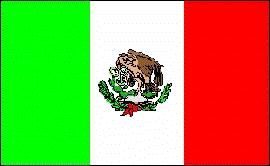 |  |
Información General
Nombre oficial: Estados Unidos Mexicanos
Área: 1 953 162 km²
Costas: 11 952,7 km
División política: 31 Estados y el Distrito Federal
Estado Capital
- Aguascalientes Aguascalientes
- Baja California Mexicali
- Baja California Sur La Paz
- Campeche Campeche
- Coahuila Saltillo
- Colima Colima
- Chiapas Tuxtla Gutiérrez
- Chihuahua Chihuahua
- Durango Durango
- Guanajuato Guanajuato
- Guerrero Chilpancingo
- Hidalgo Pachuca
- Jalisco Guadalajara
- México Toluca
- Michoacán Morelia
- Morelos Cuernavaca
- Nayarit Tepic
- Nuevo León Monterrey
- Oaxaca Oaxaca
- Puebla Puebla
- Querétaro Querétaro
- Quintana Roo Chetumal
- S. Luis Potosí S. Luis Potosí
- Sinaloa Culiacán
- Sonora Hermosillo
- Tabasco Villahermosa
- Tamaulipas Ciudad Victoria
- Tlaxcala Tlaxcala
- Veracruz Jalapa
- Yucatán Mérida
- Zacatecas Zacatecas
Unidad monetaria: Peso
1 Peso = 100 centavos
Idiomas: Español (oficial). Se hablan, además, sesenta y seis lenguas indígenas, entre ellas náhuatl, maya, zapoteco, mixteco, tzeltal, otomí, tzotzil, totonaca, mazateco, mazahua, chol, huasteco y chinanteco
Fiesta nacional: 16 de septiembre, Día de la Independencia
Gentilicio: Mexicano
Hora oficial: GMT Campeche, Quintana Roo, Yucatán -6 horas (normal), -5 (verano); Sonora, Sinaloa, Nayarit, Baja California Sur -7 (normal/verano); Baja California Norte -8 (normal), -7 (verano), otros estados -6 (normal/verano)
Miembro de: ONU, OEA, ALADI, SELA, TLC, OCDE
Curiosidades
México es después de Brasil el segundo país en población de América Latina.
Formalmente a México se le agrupa en América del Norte, en realidad constituye un puente entre esta región y América Central y el Caribe.
El centro de la capital mexicana ha descendido unos 7,5mm en los últimos cien años debido al agotamiento del manto acuífero sobre el que descansa.
La historia prehispánica de México presenta características singulares dentro de América Latina. Cuando muchas de las naciones europeas eran sólo provincias del Imperio romano, ya existían en México civilizaciones importantes.
Tenochtitlán fue en su tiempo (1329) la ciudad más grande del mundo. En la época en que Londres no tenía más de 45 000 habitantes, en Tenochtitlán vivían medio millón de personas. La plaza comercial de Tenochtitlán funcionaba diariamente y se estima que concurrían a ella unos 20 000 comerciantes.
En la plaza de Tenochtitlán se vendió por primera vez en el mundo la nieve de sabores, con el hielo traído de los volcanes.
Los toltecas una civilización que se desarrolló en el valle de México adoraban a Quetzalcoatl, cuyo nombre significa "inteligencia divina" y que se supone fue venerada antes por los olmecas. Sobre la figura de Quetzalcoatl se han tejido diversas leyendas, hasta atribuirle un origen extraterrestre.
Información adicional en Internet.
Perfil Ecónomico
Perfil Demográfico
Fuente: http://www.inegi.gob.mx/
Perfil Cultural
Alfabetismo: 91 %
Religión:
- Católicos: 89,7%
- Protestantes: 4,90%
- No religiosos : 3,20%
- Otros: 2,20%.
Algunas figuras notables:
- Mario Moreno (Cantinflas) (1911-1993). Actor
- Carlos Chávez (1899-1978). Compositor
- Agustín Lara (1900-1970). Compositor
- Mario Molina. Premio Nobel de Química
- Amado Nervo (1870-1919). Poeta
- José Clemente Orozco (1883-1949). Pintor
- Octavio Paz (1914-1998). Poeta, escritor, ensayista y crítico literario. Premio Nobel de Literatura en 1990.
- Manuel M. Ponce (1882-1948).Compositor
- Alfonso Reyes (1889-1959). Historiador, ensayista y poeta
- Diego Rivera (1886-1957). Pintor
- David Alfaro Siqueiros (1896-1974).Pintor
Lugares declarados patrimonio mundial por la UNESCO
- El Tajín (Ciudad prehispánica)
- México (Centro histórico y Xochimilco)
- Puebla (Centro histórico)
- Teotihuacán (Ciudad prehispánica)
- Palenque (Ciudad prehispánica y Parque Nacional)
- Sian Ka'an (Reserva de la Biosfera)
- Chichén Itzá (Ciudad prehispánica)
- Guanajuato (Ciudad histórica y minas adyacentes)
- Monte Albán (Sitio arqueológico)
- Oaxaca (Zona histórica)
- Morelia (Centro histórico)
- Pinturas rupestres de la Sierra de San Francisco
- Zacatecas (Centro histórico)
- Santuario de ballenas de El Vizcaíno
- Primeros monasterios del siglo XVI sobre las laderas del Popocatépetl
Sistema de Gobierno
Constitución vigente: 5 de febrero de 1917
Sistema ejecutivo: Presidente (elegido por sufragio universal para desempeñar el cargo por un período de seis años, no reelegible), diecisiete Secretarios de Estado, el Jefe del Departamento del Distrito Federal, el Procurador General y agencias autónomas.
Sistema legislativo: Congreso compuesto de dos cámaras: de Diputados (500 miembros elegidos para un término de tres años, 300 por mayoría simple y 200 divididos proporcionalmente entre los partidos que no obtengan representantes por mayoría simple y por lo menos, el 1,5% de la votación) y Senado (sesenta y cuatro miembros, dos elegidos por un término de seis años por cada estado y el Distrito Federal). Los senadores y diputados no son reelegibles en períodos consecutivos.
Sistema judicial: Corte Suprema (veintiún miembros, nombrados por el Ejecutivo y ratificados por el Senado), cortes de circuito y cortes de distrito.
Gobierno subdivisional: En los Estados, el Ejecutivo lo ejerce el Gobernador, el Legislativo, la Cámara de Diputados y el Judicial, el tribunal Supremo de Justicia del estado (hay 2 378 municipios). El jefe (regente) del Departamento del Distrito Federal es nombrado por el Presidente de la República, pero a instancias de los ciudadanos se busca su primer nombramiento por elección popular. El primer paso fue la elección de la Asamblea Legislativa del D.F..
Aproximación histórica
Al sur del Río Grande, en el extremo Sur de América del Norte, se encuentra México.
Poblado desde unos 8 000 a 10 000 años antes de Cristo, en el territorio actual de México florecieron algunas de las civilizaciones más importantes de la América Antigua: otomí, olmeca, tolteca, teotihuacanos y los aztecas o mexicas.
En los primeros años de la era cristiana aparece una civilización de la que se conservan figuras de barro y que se conoce como cultura otomí y de los que se encuentran huellas en los estados de México, Puebla y en la propia Ciudad de México. Es posible que esta civilización descendiera de los maya-quiché que también poblaron el territorio mexicano. Hay también hallazgos sobre la presencia de mixtecas y zapotecas, así como de los tlaxcaltecas y tarascos.
La otra civilización importante, para muchos estudiosos, una "cultura madre", es la de los olmecas y muchos de sus rasgos fueron incorporados a las culturas tolteca, teotihuacana y azteca. Los toltecas eran un pueblo pacífico que alcanzó un elevado nivel cultural. Adoraban a Quetzalcoatl
En el siglo III se desarrolló la cultura de Teotihuacán que desapareció cuatro siglos antes de que floreciera la cultura azteca. La Pirámide del Sol, construida del siglo I al III, es la mayor pirámide del continente americano.
En Yucatán y otras regiones han quedado muestras de la cultura maya, como en Uxmal, al sur de México.
Uno de los grandes imperios y civilizaciones del continente americano son los mexicas, aztecas o anahuacas. Los aztecas se establecieron en el valle de México y fundaron su capital Tenochtitlán en 1329. El imperio azteca se extendió de México hasta Nicaragua (Nican ca anahuac, que significa hasta aquí llega Anahuac). La ciudad de Tenochtitlán llegó a tener medio millón de habitantes. Los aztecas desarrollaron una arquitectura monumental con gran desarrollo científico y una ingeniería hidráulica que les permitió trasladar el agua por diques y canales. Construyeron la ciudad sobre pilotes y tuvieron un jardín botánico y un zoológico. Los mexicas llegaron a intercambiar representantes con los incas.
El imperio azteca estaba en su máximo esplendor cuando Hernán Cortes, con 600 hombres desembarcó en tierra mexicana en 1519 y fundó la ciudad de Veracruz. Moctezuma II, desde la ciudad imperial de Tenochtitlán, construida sobre una isla del lago de Texcoco, en el alto valle de México, reinaba sobre un vasto territorio que abrigaba a varios millones de habitantes.
El que los españoles lograran conquistar a este imperio se debió a varios factores, fundamentalmente a que lograron el apoyo de otros pueblos sometidos por los aztecas.
Producida la conquista del imperio azteca, España creó en 1535 el Virreinato de Nueva España, uno de los más importantes de América, por sus grandes riquezas.
En 1810, estalló en México el primer movimiento revolucionario encabezado por el cura Hidalgo, el que fue seguido luego de su fracaso, por el cura Morelos, ambos fueron fusilados y la rebelión sofocada.
En 1821 México se declara monarquía constitucional independiente y en 1822 se proclama emperador Agustín de Iturbide que es derrocado por el movimiento revolucionario dirigido por el General Santa Ana, estableciéndose la República en 1824. Durante este período México se ve envuelta en una guerra con los Estados Unidos de Norteamérica y pierde gran parte de sus territorios. Combatido por los liberales, Santa Ana es sucedido por Benito Juárez. En 1861 franceses, ingleses y españoles invaden el país. Los franceses permanecen y coronan al Archiduque austríaco, Maximiliano de Habsburgo, emperador de México. Juárez dirigi la resistencia y en 1867 la monarquía es derrocada.
México surge como estado moderno durante la dictadura del general Porfirio Díaz de 1877 a 1911. Este régimen inserta a México en la economía mundial como exportador de productos agrícolas y minerales, pero margina a las clases medias y a los campesinos.
En 1910 se inicia la Revolución Mexicana, la primera revolución popular del siglo XX, con líderes destacados como Emiliano Zapata, Pancho Villa y Venustiano Carranza. En 1915 Carranza domina casi todo México. Zapata es asesinado en 1919, Pancho Villa abandona la lucha y es asesinado tres años más tarde.
El general Lázaro Cárdenas, presidente entre 1934 y 1940 prosigue el movimiento revolucionario y sienta las bases del régimen político mexicano.
El territorio mexicano presenta dos cadenas montañosas: la Sierra Madre Occidental, paralela al Pacífico y la Oriental, con valles altiplanicies y mesetas entre la dos.
México es productor de petróleo y plata. Cuenta con industria automovilística, siderúrgica, del petróleo, química, textil, alimenticia, de bebidas y del papel.
Su capital es una de las ciudades más pobladas del planeta, con más de 15 millones de habitantes en toda su zona urbana y uno de los centros culturales más importantes del mundo.
Islas Malvinas
 |
Información general
Nombre oficial: Islas Malvinas
Área: 12 173 km²
División política:Territorio británico dependiente, reclamado por Argentina
Unidad monetaria: Libra de Islas Falkland
Idiomas: inglés (no oficial)
Gentilicio: de Islas Malvinas
Curiosidades
Las islas Malvinas recibieron el nombre de Falkland, en honor al vizconde de Falkland, tesorero de la Armada Real Británica, en 1690, año en que desembarcan los ingleses en ellas.
Perfil Ecónomico
Perfil Demográfico
Población: 2.967 hab.
Densidad de población: 0, 24 hab/km²
Perfil Cultural
Religión:
- Anglicanos: 42,0%
- Protestantes: 25,0%
- No religiosos: 15,0%
- Católicos: 11,0%
- Otros: 7,0%.
Sistema de Gobierno
Constitución vigente: 3 de octubre de 1985
Sistema ejecutivo: Gobernador (representante del Monarca británico), Consejo Ejecutivo, Jefe del Ejecutivo.
Sistema legislativo: Consejo Legislativo (diez miembros, ocho de ellos electos).
Sistema judicial: Corte Suprema, Corte de Magistrado, Corte de Jurisdicción Sumaria, Corte de Apelaciones (en el Reino Unido)
Aproximación histórica
Las Islas Malvinas son un archipiélago al sur del Océano Atlántico, administrado por el Reino Unido y que Argentina reclama desde hace años. Está formado por dos grandes islas: la Occidental, o Gran Malvina y la Oriental, o Soledad, separadas por el estrecho de San Carlos, o Falkland y unos 200 islotes menores.
El relieve es escabroso y el punto más alto es el monte Usborne, en la Soledad. Las costas son irregulares con muchas bahías y fiordos.
Las islas fueron descubiertas en 1592 y no es hasta 1690 en que un barco británico llega a las islas.
De 1764 a 1771 se producen disputas entre franceses, españoles y británicos por la posesión de las islas. En 1811, España retira su guarnición de las Malvinas y en 1820 Argentina envía un barco y proclama su soberanía sobre las islas, como sucesor de España.
En 1831 un barco de guerra de E.U. expulsa a la mayor parte de los argentinos y en 1832 una expedición británica expulsa al resto de los colonos argentinos y proclama en 1833 su soberanía sobre las Malvinas.
En 1966 a instancias de la ONU se comienza a negociar una solución entre Argentina y el Reino Unido por la posesión de las islas.
En 1982 Argentina toma militarmente las islas y se inicia el enfrentamiento con el Reino Unido hasta que después de sangrientas luchas las tropas argentinas se rinden a las británicas.
Argentina
| 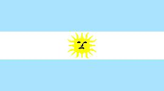 |  |
Información general
Letra del himno nacionalhimno_22.
Nombre oficial: República Argentina.
Área: 2 779 221 km².
Costas: 4 986 km.
División política:1 Distrito Federal y 23 Provincias
El territorio argentino comprende la parte continental, la parte oriental de La Isla Grande de Tierra del Fuego, que comparte con Chile y reclama una parte de la Antártida, el archipiélago de las Malvinas o Falkland, las Orcadas del Sur, Georgia del Sur, Sandwich del Sur y varias islas al sur de la Tierra del Fuego.
Provincia Capital
- Buenos Aires La Plata
- Catamarca San Fernando del Valle
- Córdoba Córdoba
- Corrientes Corrientes
- Chaco Resistencia
- Chubut Rawson
- Entre Ríos Paraná
- Formosa Formosa
- Juyjuy San Salvador de Juyjuy
- La Pampa Santa Rosa
- La Rioja La Rioja
- Mendoza Mendoza
- Misiones Posadas
- Neuquén Neuquén
- Río Negro Viedma
- Salta Salta
- San Juan San Juan
- San Luis San Luis
- Santa Cruz Río Gallegos
- Santa Fe Santa Fe
- Stgo. del Estero Stgo. del Estero
- Tierra del Fuego Usuhuaia
- Tucumán San Miguel de Tucumán
Unidad monetaria: Peso.
1 Peso = 100 centavos.
Idiomas: Castellano (oficial), araucano, guaraní, quechua, en comunidades específicas puede hablarse italiano, gallego, yiddish, alemán, galés etc.
Fiesta nacional: 9 julio, Proclamación de la Independencia.
Gentilicio: Argentino.
Hora oficial: GMT-3 (normal/verano).
Miembro de: ONU, OEA, ALADI, MERCOSUR.
Curiosidades
Por su superficie Argentina ocupa el segundo lugar en Sudamérica, después de Brasil.
La Pampa al este de la región central, es uno de los rasgos dominantes del paisaje argentino. Las inmensas llanuras argentinas son una de las zonas más fértiles del mundo.
Las cataratas del Iguazú, ubicadas a 20 Km de la unión del río de su mismo nombre con el Paraná (provincia de Misiones) y Brasil son consideradas las más anchas del mundo (4000 metros). En realidad forman una grandiosa precipitación de 275 cascadas, con un caudal que puede alcanzar los 10 600 m³ de agua por segundo, desde alturas que varían entre 40 y 80 metros.
Información adicional en Internet.
Perfil Ecónomico
Perfil Demográfico
Población total: 38.226.000
Densidad de población: 13.5
Perfil Cultural
Alfabetismo: 97 %.
Religión:
- Católicos: 89,9%
- Protestantes: 3,0%
- No religiosos: 2,4%
- Judíos: 2,0%
- Ortodoxos: 0,6%
Algunas figuras notables:
- Jorge Luis Borges (1899-1996). Escritor, poeta y ensayista.
- Raquel Forner (1902). Pintora.
- Carlos Gardel (1887-1935). Compositor e intérprete.
- Alberto Ginastrena (1916). Compositor.
- José Hernández (1834-1886). Poeta.
- Bernardo A. Houssay (1997-1971). Médico.
- Bartolomé Mitre (1821-1906). Escritor y político.
- Domingo F. Sarmiento (1811-1888). Político, educador y escritor.
- Carlos Saavedra Lamas (1879-1959). Premio Nobel de la Paz 1936.
- Adolfo Pérez Esquivel (1931). Premio Nobel de la Paz 1936.
Lugares declarados patrimonio mundial por la UNESCO
- Misiones jesuíticas guaraníes (Sta. María Mayor).
- Misiones jesuíticas guaraníes (Ntra. Sra. del Loreto).
- Misiones jesuíticas guaraníes (San Ignacio Mini).
- Misiones jesuíticas guaraníes (Sta. Ana).
- Parque Nacional Los Glaciares.
- Parque Nacional Iguazú.
Sistema de Gobierno
Constitución vigente: 1853 (enmendada en 1860, 1866, 1898, 1957, 1994).
Sistema ejecutivo: Presidente (elegido para un período de cuatro años por voto popular directo, en doble vuelta y con posibilidades de ser reelegido por un solo período consecutivo; vicepresidente; jefe de Gabinete (nombrado por el presidente); gabinete integrado por ocho ministros; secretarios.
Sistema legislativo: Senado (tres senadores por cada provincia y tres por la ciudad de Buenos Aires, elegidos de forma directa y conjunta por seis años a razón de un tercio renovable cada dos años, correspondiendo dos bancas al partido político con la mayoría de los votos y la restante al partido que les siga); Cámara de Diputados (257 miembros elegidos en forma directa por cuatro años y reelegibles, renovables por mitad cada bienio).
Sistema judicial: Corte Suprema de Justicia (nueve magistrados), cámaras federales y de apelación; jueces federales, ordinarios, de paz.
Gobierno subdivisional: Cada provincia está gobernada por sus propias instituciones y elegible por sufragio directo de adultos su gobernador y legisladores.
Aproximación histórica
Argentina está situada al sudeste de América. Limita por el Norte con Bolivia y Paraguay, con Brasil y Uruguay por el nordeste, con Chile por el oeste, con el Polo Sur por el sur y con el océano Atlántico por el este. Además del territorio nacional continental, comprende la parte oriental de la Isla Grande de Tierra del Fuego y reclama una parte de la Antártida, el archipiélago de las Malvinas o Falkland, las Orcadas del Sur, Georgia del Sur, Sándwich del Sur, varias islas al sur de la Tierra del Fuego y otras en el río Uruguay.
En 1516, los conquistadores españoles, liderados por Juan Díaz de Solís llegaron al Río de la Plata. Buenos Aires fundada en 1580 se convierte en la capital del Virreinato de la Plata. La independencia es proclamada en Tucumán el 9 de Septiembre de 1816, como resultado de la campaña de liberación dirigida por el general José de San Martín.
Argentina presenta características geográficas muy variadas: amplias y fértiles planicies, la pampa hacia el centro; extensas llanuras hacía el norte, el denominado Chaco, vocablo quechua que significa "país de cacería"; el cordón montañoso de los Andes hacia el oeste y la denominada Patagonia, hacia el sur, con una altitud promedio de 1000 metros, sobre el nivel del mar y un clima riguroso debido a las bajas temperaturas.
Entre las actividades económicas ocupa un lugar importante la ganadería. La industria ha alcanzado un desarrollo significativo en diferentes renglones.
La capital de Argentina, Buenos Aires, con cerca de 3 millones de habitantes es uno de los centros culturales más importantes de América.
Bolivia
| 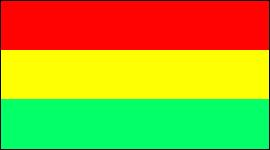 | 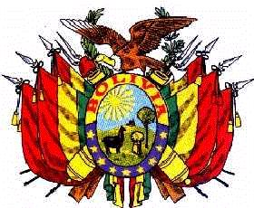 |
Letra del himno nacionalhimno_23.
Información general
Nombre oficial: República de Bolivia
Área: 1 098 581 km²
Costas: No tiene costas marítimas
División política:9 Departamentos
Provincia Capital
- Beni Trinidad
- Cochabamba Cochabamba
- Chuquisaca Sucre
- La Paz La Paz
- Oruro Oruro
- Pando Cobija
- Potosí Potosí
- Santa Cruz Santa Cruz de la Sierra
- Tarija Tarija
Unidad monetaria: Boliviano
1 Boliviano = 100 centavos
Idiomas: Español, quechua, aimará y tupiguaraní (oficiales); guaraní (no oficial). Algunas comunidades de origen extranjero hablan también japonés, portugués y unos cuarenta más
Fiesta nacional: 6 de agosto, Día de la Independencia
Gentilicio: Boliviano
Hora oficial: GMT -4 horas (normal/verano)
Miembro de: ONU, OEA, ALADI, Pacto Andino, Tratado Amazónico
Curiosidades
La Paz situada en la región centro-occidental de Bolivia, a 3 627 m de altura, es la capital más alta del mundo. El aeropuerto internacional de El Alto a 4 085 m de altura, es también el más elevado del mundo.
En el flanco nororiental de Bolivia están los "yungas", tierras intermedias entre el altiplano y los llanos dedicados principalmente al pastoreo y la ganadería.
El lago Titicaca, en la altiplanicie de los Andes, tiene una superficie de 8 300 km², contiene numerosas islas y es navegable por embarcaciones de gran calado. La frontera entre Perú y Bolivia lo atraviesa de norte a sur.
Bolivia ha sufrido 190 golpes de Estado después de la independencia.
Perfil Ecónomico
Perfil Demográfico
Población: 9.427.219 hab.
La población comprende un elevado número de personas de ascendencia amerindia. Las que conservan su lengua y costumbres son más de la mitad del total.
Densidad de población: 7,7 hab/km².
Fuente: INE http://www.ine.gov.bo/cgi-bin/PobComunitLocalidadesADAxx.exe
http://www.ine.gov.bo/asp/indicadores.asp?TI=1
Perfil Cultural
Alfabetismo: 86%
Religión:
- Católicos: 89,5%
- Protestantes: 3,7%
- No religiosos: 2,0%
- Religiones tribales 1,8%
- Otros: 3,0%
Algunas figuras notables:
- Nataniel Aguirre (1843-1888). Poeta, novelista y dramaturgo
- Alcides Arguedas (1879-1946). Escritor
- Jaime Laredo (1942). Violinista
- Gabriel René Moreno (1834-1908). Historiador
- Melchor Pérez de Holguín (1665-1724). Pintor
- Franz Tamayo (1879-1956). Escritor, periodista y diputado
Lugares declarados patrimonio mundial por la UNESCO
- Potosí (Ciudad minera).
- Misiones jesuíticas de Chiquitas.
- Sucre (Ciudad histórica).
Sistema de Gobierno
Constitución vigente: 1967 (última modificación 2004)
Sistema ejecutivo: Presidente y Vicepresidente, elegidos por sufragio directo para un término de cuatro años, no reelegibles para el período inmediato. Gabinete de Ministros.
Sistema legislativo: Senado (veintisiete miembros, elegidos por cuatro años) y Cámara de Diputados (130 miembros, elegidos por cuatro años).
Sistema judicial: Corte Suprema (doce magistrados), cortes de Distritos y juzgados.
Gobierno subdivisional: Cada departamento se subdivide en provincias y cantones, y está gobernado por un prefecto nombrado por el Presidente de la República.
Aproximación histórica
Situada en el medio del continente y lejos de todos los mares se encuentra Bolivia. Su territorio colinda con Brasil, Paraguay, Argentina, Chile y Perú.
Desde 500 años a.C. se desarrollaron en el altiplano boliviano algunas culturas agroalfareras que culminarían con la cultura del Tiahuanaco, notable por sus construcciones ciclópeas de piedra labrada. Los quechua y aimará habitan el altiplano boliviano en el siglo XII, cuando son dominados por el imperio Inca. La conquista española se inicia en 1530 y los indios son obligados a trabajar en las minas del Alto Perú, hoy Bolivia.
En 1809 se produce en esta región uno de los primeros movimientos emancipadores. En 1825, después de la victoria de Ayacucho, Simón Bolívar y Antonio José de Sucre proclaman la independencia de la "República de Bolívar", mas tarde llamada Bolivia, en homenaje al libertador y cuyo primer presidente fue Sucre.
En La Guerra del Pacífico (1879-1884) Bolivia pierde ante Chile su único acceso al mar. En la Guerra del Chaco (1932-1935) Bolivia pierde el territorio con Paraguay. Sigue luego un período de gobiernos militares que no resuelve los grandes problemas económicos del país. En 1952 una revolución popular liderada por Víctor Paz Estenssoro, restablece el poder civil, nacionaliza las minas, promueve la reforma agraria y purga las Fuerzas Armadas. En 1964 un golpe militar lleva al poder al general René Barrientos y cambia parte de las reformas de 1952. En 1967 tropas bolivianas con el apoyo norteamericano capturan y ejecutan al líder guerrillero Ernesto "Che" Guevara.
En Bolivia se pueden distinguir dos regiones: el Altiplano y el Oriente. El Altiplano andino consiste en una meseta de 380 metros de altitud y en él se alternan tanto altos relieves, como valles interiores, como el de Cochabamba y una cuenca cerrada en que se encuentra el lago Titicaca a 3 810 metros sobre el nivel del mar. En la región oriental descienden valles que fluyen hacía la llanura que conforma el oriente boliviano.
La gran inestabilidad política, con 190 golpes de estado, después de su independencia, ha incidido significativamente limitando el crecimiento económico de Bolivia.
La minería renace en el país a finales del siglo XIX, gracias a la gran demanda internacional de estaño. Bolivia posee grandes recursos minerales, como estaño, plomo, plata, oro, cobre, tungsteno y petróleo.
Su capital La Paz, esta circundada por las imponentes alturas de la cordillera Real, entre las que se destaca el nevado del Illimani con 6 525 metros de altitud.
Chile
 |
Información general
Nombre oficial: República de Chile
Área: 736 902,9 km²
Costas: 6435 km
División política: 12 regiones, la Región Metropolitana de Santiago y 51 provincias
Regiones Capitales
- Tarapacá Iquique
- Antofagasta Antofagasta
- Atacama Copiapó
- Coquimbo La Serena
- Valparaíso Valparaíso
- R. Metrópolitana de Santiago Santiago
- Libertador Gral.Bernardo O'Higgins Rancagua
- Maule Talca
- Biobío Concepción
- La Araucanía Temuco
- Los Lagos Puerto Montt
- Aisén del Gral.Carlos Ibáñez Coihaique
- Magallanes y de la Antártida Chilena Punta Arenas
Unidad monetaria: Peso
1 Peso = 100 centavos
Idiomas: Castellano o español (oficial); mapuche, quechua, aimará (no oficiales); algunas comunidades de origen extranjero hablan también alemán, inglés y francés
Fiesta nacional: 18 de septiembre, Independencia Nacional
Gentilicio: Chileno
Hora oficial:GMT -4 horas (normal); GMT -3 horas (verano)
Miembro de: ONU, OEA, ALADI
Curiosidades
Chile ocupa una estrecha faja (anchura máxima 445 Km, mínima 90 Km) que se extiende por el extremo sudoccidental de América del Sur y posee además numerosas islas, entre ellas la Isla Grande de Tierra del Fuego que comparte con Argentina, Diego Ramírez, Sala y Gómez, Pascua y los archipiélagos de Juan Fernández y los Chonos. Chile esta situado en un área de inestabilidad geológica en que ocurren grandes terremotos.
El desierto de Atacama es el lugar más seco de la tierra (menos de 0,1 mm de precipitación promedio al año). Por su superficie (180 000 Km²)es el segundo desierto del continente y uno de los 20 más extensos del mundo. Su subsuelo es rico en minerales, especialmente nitratos y cobre.
Información adicional en Internet.
Perfil Ecónomico
Perfil Demográfico
Población: 15.116.435 hab.
Densidad de población: 20 hab/km²
Fuente INE Censo 2002 http://www.ine.cl/cd2002/sintesiscensal.pdf
Perfil Cultural
Alfabetismo: 96 %
Religión:
- Católicos: 70 %
- Protestantes (Incluidos los evangélicos): 15,1%
- No religiosos: 8,3%
- Otros: 4,3%
Algunas figuras notables:
- Nemesio Antúnez (1918-1993). Pintor y grabador
- Claudio Arrau (1903-1991). Pianista
- Alberto Blest Gana (1830-1920). Novelista
- Vicente Huidobro (1893-1948). Poeta y escritor
- Roberto Matta (1912). Pintor
- Gabriela Mistral (1889-1957) (Lucila Godoy). Poetisa Premio Nobel de Literatura 1945
- Pablo Neruda (1904-1973). Poeta. Premio Nobel de Literatura 1971
- Benjamin Vicuña Mackenna (1831-1886). Historiador y periodista
Lugares declarados patrimonio mundial por la UNESCO
- Parque Nacional de Rapa Nui, Isla de Pascua.
Sistema de Gobierno
Constitución vigente: 1981 (Última modificación 2005)
Sistema ejecutivo: Presidente (elegido directamente para un período de cuatro años, no reelegible para un período inmediato).
Sistema legislativo: Senado (cuarenta y siete miembros: ocho de ellos designados, dieciocho renovables cada cuatro años y los restantes, incluidos los designados, cada ocho años). Cámara de Diputados (120 miembros, electos cada cuatro años).
Sistema judicial: Corte Suprema de Justicia (diecisiete magistrados), diecisiete cortes de apelaciones y juzgados.
Gobierno subdivisional: Cada una de las doce regiones está encabezada por un Intendente; las cincuenta y una provincias tienen Gobernadores propios, elegidos por votación directa. Hay además, más de 300 municipios encabezados por Alcaldes.
Aproximación histórica
Chile se extiende entre la cordillera de los Andes y el Océano Pacífico, a lo largo de 4 300 Km y ningún punto del territorio sobrepasa la anchura de 445 km. Colinda con Perú y Bolivia por el Norte, con Argentina por el este y con el Polo Sur en su extremo meridional. Miles de islas e islotes dan a la costa meridional chilena la apariencia de un inmenso encaje. También pertenecen a Chile algunas islas alejadas en el Pacífico, entre las que se encuentra la Isla de Pascua, notable por el misterio de sus monumentos de piedra y otros vestigios de una cultura polinésica desconocida.
Fernando de Magallanes descubre las tierras chilenas en 1520. La lucha por la independencia se inicia en 1811, dirigida por Bernardo O´Higgins y apoyada por el argentino José de San Martín. Los españoles son derrotados en la batalla de Maipú en 1816 y el país obtiene su independencia.
En su relieve se presentan tres formaciones diversas: la cordillera de los Andes, con una veintena de picos, la cordillera de la costa, cuya altitud promedio no sobrepasa los 2 000 metros y la depresión intermedia, árida en el norte, con pampas desérticas y salinas como en el desierto de Atacama.
Los principales productos agrícolas de Chile son frutas, legumbres y madera. En la minería se explotan el cobre, oro, plata, salitre, molibdeno y yodo. Chile cuenta con industria maderera, papel, textil, química y del caucho.
Colombia
 |
 |
Información general
Nombre oficial: República de Colombia
Área: 1141748 km²
Costas: 3 208 km
Colombia está situada al Noroeste de América del Sur y es el cuarto país del continente por su tamaño. Son parte del territorio colombiano las islas caribeñas de San Andrés, Providencia y Santa Catalina, igualmente las de Gorgona, Gorgonilla y Malpelo en el Pacífico.
División política: 32 Departamentos
Departamento Capital
- Amazonas Leticia
- Antioquía Medellín
- Atlántico Barranquilla
- Arauca Arauca
- Bolívar Cartagena
- Boyacá Tunja
- Caldas Manizales
- Caquetá Florencia
- Casanare Yopal
- Cauca Popayán
- Cesar Valledupar
- Córdoba Montería
- Cundinamarca Santafé de Bogotá
- Chocó Quibdó
- La Guajira Riohacha
- Guainía Puerto Inírida
- Guaviare San José del Guaviare
- Huila Neiva
- Magdalena Santa Marta
- Meta Villavicencio
- Nariño Pasto
- Norte de Santander Cúcuta
- Quindío Armenia
- Putumayo Mocoa
- Risaralda Pereira
- Santander Bucaramanga
- Sucre Sincelejo
- Tolima Ibagué
- Valle del Cauca Cali
- San Andrés y Providencia San Andrés
- Vaupés Mitú
- Vichada Puerto Carreño
Unidad monetaria: Peso
1 Peso = 100 centavos
Idiomas: Español (oficial); (no oficiales) hay distintas comunidades de origen extranjero; se hablan alrededor de noventa lenguas indígenas: chibcha, guajiro y otras
Fiesta nacional: 20 de julio, Independencia
Gentilicio: Colombiano
Hora oficial: GMT -5 horas (normal/verano)
Miembro de: ONU, OEA, ALADI, Pacto Andino
Curiosidades
La Sierra Nevada de Santa Marta es la cadena costera más alta del mundo. Su pendiente norte es comparable con la cara sur del Himalaya.
Santafé de Bogotá está a 2 630 metros sobre el nivel del mar.
El territorio colombiano está atravesado de Norte a Sur por la gran cordillera de los Andes, que se divide en tres cadenas: Occidental, Central y Oriental.
Información adicional en Internet.
Perfil Ecónomico
Perfil Demográfico
Población: 46.045.109 hab.
Densidad de población: 39,7 hab/km²
Perfil Cultural
Alfabetismo: 92 %
Religión:
- Católicos: 95,4%
- Otros: 1,1%
Algunas figuras notables:
- Francisco J. de Caldas (1770-1816). Naturalista y patriota
- León de Greiff (1895-1976). Escritor y poeta
- Jorge Isaacs (1837-1895). Poeta y novelista
- José Eustasio Rivera (1889-1928). Poeta y novelista
- Guillermo Uribe (1880-1972). Compositor
- José Asunción Silva (1865-1896). Poeta y escritor
- Germán Arciniegas (1900). Profesor, escritor y periodista
- Gabriel García Márquez (1928). Escritor y novelista. Premio Nobel de Literatura 1982.
- Fernando Botero (1932). Pintor
- Edgar Negret (1920). Escultor
- Alvaro Mutis. (1923). Poeta y narrador. Premio Príncipe de Asturias 1997.
- Manuel Elkin Patarroyo (1947). Científico.
Lugares declarados patrimonio mundial por la UNESCO
- Cartagena (Puerto, fortaleza y monumentos).
- Parque Arqueológico de San Agustín.
- Santa Cruz de Mompox.
- Parque Nacional Natural Los Katíos.
- Parque Arqueológico de Tierradentro.
Sistema de Gobierno
Constitución vigente: 6 de julio de 1991
Sistema ejecutivo: Presidente (no reelegible de por vida), Vicepresidente y los ministros determinados por la ley. El Presidente y el Vicepresidente son elegidos para un período de cuatro años por la mitad más uno de los votos emitidos en votación popular directa
Sistema legislativo: Congreso Bicameral, formado por el Senado (ciento dos miembros elegidos por circunscripción nacional para un término de cuatro años y un número adicional de dos senadores elegidos en circunscripción nacional por comunidades indígenas) y la Cámara de Representantes (161 miembros elegidos por cuatro años, dos representantes por cada circunscripción nacional y una más por cada 250 000 habitantes o fracción mayor de 25 000)
Sistema judicial: Corte Suprema de Justicia, Corte Constitucional, Consejo de Estado, Tribunales y Juzgados y Corte Electoral. Los magistrados son nombrados por la respectiva corporación de listas enviadas por el Consejo Superior de la Judicatura
Gobierno subdivisional: Los departamentos tienen Gobernadores y legisladores propios elegidos por sufragio. Se subdividen en municipios, con un alcalde electo cada dos años por votación directa
Aproximación histórica
Situada en los Andes Septentrionales, con costas al Mar Caribe y al Océano Pacífico, se encuentra Colombia. Limita con Venezuela y Brasil por el Este, con Ecuador y Perú por el Sur y con Panamá por el Oeste.
Al llegar los españoles, a principios del siglo XVI, varios pueblos indígenas poblaban el territorio. Algunos como los chibchas se destacaron por su organización social. En general todos los grupos indígenas que habitaban el territorio colombiano dejaron trabajos en cerámica y sobresalieron de modo singular en la orfebrería utilizando el oro y el cobre, en objetos de riqueza inusitada y simetría perfecta. Luchas de los conquistadores con los indígenas retrasaron la organización definitiva del Virreinato de Nueva Granada hasta 1740. La batalla de Boyacá, en 1819, decide la independencia de la Nueva Granada. La campaña libertadora continental emprendida por Simón Bolívar, primer presidente de la Gran Colombia, primera unión de Nueva Granada, Venezuela y Ecuador, determina durante una década, los sucesos de la región y en 1830, se cierra el primer capítulo de la historia de Colombia, al retomar su autonomía una vez deshecha la unión bolivariana.
En su superficie se distinguen prácticamente dos Colombias, los llanos orientales, donde señorea la llanura, alternada con la selva y donde la población es mucho menor y la región andina.
Estas características determinan variedad de climas, de acuerdo con la altitud.
En Colombia es notoria la producción de gas, carbón, oro, plata y petróleo, con un incremento industrial en los últimos años. Su capital Santafé de Bogotá, con más de 6 millones de habitantes, es una de las ciudades más importantes de América.
Costa Rica
| 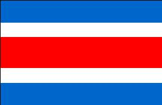 | 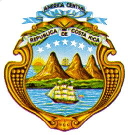 |
Información general
Nombre oficial: República de Costa Rica
Área: 51 100 km²
Costas: 1 290 km
División política:
División política: 7 Provincias
Provincia Capital
- Alajuela Alajuela
- Cartago Cartago
- Guanacaste Liberia
- Heredia Heredia
- Limón Limón
- Puntarenas Puntarenas
- San José San José
Unidad monetaria: Colón costarricense
1 Colón costarricense = 100 centavos
Idiomas: Español (oficial); como en otros países de América Central, en el litoral caribeño de Costa Rica se habla el inglés (no oficial)
Fiesta nacional: 15 de septiembre, Independencia
Gentilicio: Costarricense
Hora oficial: GMT -6 horas (normal/verano)
Miembro de: ONU, OEA, ALADI (observador), MCCA
Curiosidades
El volcán Poás de 2 737m de altitud situado en la provincia de Alajuela, tiene un cráter de 1, 6 Km de diámetro donde se destacan dos lagunas, una de aguas puras y frías rodeadas de vegetación y la otra, a más profundidad, está formada por materias ígneas siendo considerado el géiser más grande del mundo, del cual se levantan chorros a más de 100 m de altura.
La playa del Tortuguero en el litoral del Caribe costarricense, es el nido y refugio más grande de la tortuga verde en el Hemisferio Occidental.
Información adicional en Internet.
Perfil Ecónomico
Perfil Demográfico
Población: 3.810.179 hab.
Densidad de población: 75 hab/km²
Fuente: http://www.inec.go.cr/
Perfil Cultural
Alfabetismo: 96 %
Religión:
- Católicos: 86,8%
- Protestantes: 6,0%
- No religiosos: 2,9%
- Anglicanos: 0,2%
- Budistas: 0,1%
- Judíos: 0,1%
- Otros: 3,9%
Algunas figuras notables:
- José M. Alfaro (1861-1939).Escritor, poeta y Académico de la Lengua
- Roberto Brenes Mesén (1874-1947). Escritor y pedagogo
- Rafael Cardona (1892-1973). Escritor, poeta y ensayista
- Lisímaco Chavarría (1878-1913). Poeta y literato
- Aquileo J. Echeverría (1866-1909). Escritor, poeta, cuentista y periodista
- Ricardo Fernández (1867-1950). Escritor, cronista e historiador
- Joaquín García Monge (1881-1958). Escritor y periodista
- Max Jiménez (1900-1947). Escritor, poeta, escultor y pintor
- Carmen Lira (1888-1949). Escritora
Lugares declarados patrimonio mundial por la UNESCO
- Reservas de la Cordillera de Talamanca-La Amistad (compartido por Costa Rica y Panamá).
- Parque Nacional La Amistad (compartido por Costa Rica y Panamá).
Sistema de Gobierno
Constitución vigente: 7 de noviembre de 1949 (Última modificación 2006)
Sistema ejecutivo: Presidente y dos Vicepresidentes, elegidos por sufragio universal directo de adultos, para un período de cuatro años y no reelegibles.
Sistema legislativo: Asamblea Legislativa (cincuenta y siete miembros, elegidos por sufragio universal directo para un término de cuatro años).
Sistema judicial: Corte Suprema de Justicia (veintidós miembros elegidos por la Asamblea para un término de ocho años, reelegibles automáticamente, a menos que la Asamblea decida lo contrario), tribunales inferiores, de trabajo, electoral.
Gobierno subdivisional: Cada provincia tiene un gobernador nombrado por el Presidente. Se dividen en cantones (con consejos municipales elegidos) y distritos. Los gobiernos municipales se regulan por las leyes nacionales.
Aproximación histórica
Costa Rica después de El Salvador, es la menor de las repúblicas centroamericanas, limita al norte con Nicaragua, por el nordeste con el mar de las Antillas y al este con Panamá. Tiene costas con el Océano Pacífico.
Descubierta por Colón, en su cuarto viaje en 1502, fue incorporada a la Capitanía General de Guatemala independiente.
En 1821, formó parte del imperio mexicano de Iturbide y en 1823 de las Provincias Unidas de Centro América, de las que se separó en 1838 proclamando su independencia en 1848.
Recorrida por una doble cadena montañosa, la Sierra Madre forma una meseta central de unos 3 000 kilómetros cuadrados que es el principal asiento de la población. Hacia las costas hay bosques tropicales; en las cordilleras abundan los conos volcánicos como el de Poás. El clima es predominantemente tropical, con abundantes lluvias, caliente y húmedo en las costas caribeñas y tierras bajas y frío en las regiones montañosas. En las fértiles tierras de la meseta se cultiva el café, uno de los productos principales de la agricultura costarricense.
En su economía predomina la agricultura y entre los principales cultivos, el café y los bananos.
Su capital es San José de Costa Rica, cuyos orígenes se remontan a 1751.
Ecuador
| 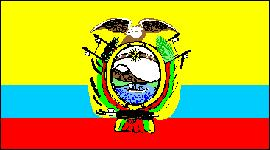 |  |
Información general
Nombre oficial: República del Ecuador
Área: 275 830 km²
Costas: 2237 km
División política:21 Provincias
Provincia Capital
- Arch. Colón (Galápagos) Puerto Baquerizo Moreno
- Azuay Cuenca
- Bolívar Guaranda
- Cañar Azogues
- Carchi Tulcán
- Cotopaxi Latacunga
- Chimborazo Riobamba
- El Oro Machala
- Esmeraldas Esmeraldas
- Guayas Guayaquil
- Imbabura Ibarra
- Loja Loja
- Los Ríos Babahoyo
- Manabí Porto Viejo
- Morona Santiago Macas
- Napo Tena
- Pastaza Puyo
- Pichincha Quito
- Sucumbíos Nueva Loja
- Tungurahua Ambato
- Zamora Chinchipe Zamora
Unidad monetaria: Sucre
1 Sucre = 100 centavos
Idiomas: Español (oficial); quechua, jíbaro, shuara, colorado y unos diez dialectos indígenas más, algunas comunidades de origen extranjero hablan también inglés y chino (no oficiales)
Fiesta nacional: 10 de agosto, Primer Grito de la Independencia
Gentilicio: Ecuatoriano
Hora oficial: GMT -5 horas (normal/verano); Galápagos: GMT -6 (normal)
Miembro de: ONU, OEA, ALADI, Pacto Andino
Curiosidades
Según un informe de las Naciones Unidas, Ecuador posee la sexta parte del número de especies animales y vegetales del mundo. Algunas de las más curiosas se encuentran en el archipiélago de Colón, o Galápagos, situado a 870Km de las costas del Ecuador, en una valiosa reserva de plantas y animales que no existen en ninguna otra parte del planeta.
Además de su territorio continental, Ecuador posee el archipiélago de Colón, o Galápagos, formado por diecisiete islas grandes y más de cien pequeñas. Otras islas son las de Tola y San Pedro en la desembocadura del río Santiago; Puna en el golfo de Guayaquil y la del Muerto al Sudoeste.
El Cotopaxi es el volcán activo más alto de la Tierra.
La bella ciudad de Quito se encuentra edificada al pie del monte Pichincha, otra cumbre volcánica en actividad.
Información adicional en Internet.
Perfil Ecónomico
Perfil Demográfico
Fuente: www.inec.gov.ec/
Perfil Cultural
Alfabetismo: 92 %
Religión:
- Católicos: 94,4%
- Protestantes: 3,0%
- No religiosos: 2,4%
- Otras: 0,2%
Algunas figuras notables:
- Jorge Carrera Andrade (1903-1979). Poeta y diplomático
- Manuel Chili (1701-. Escultor y tallador
- Oswaldo Guayasamín (1919-1999 ). Pintor
- Jorge Icaza (1906). Escritor
- Jacinto Jijón Caamaño (1890-1950). Académico de la Lengua y Arqueólogo
- Numa Pompilio Llona (1832-1907). Poeta, escritor y diplomático
- Juan Montalvo (1832-1889). Escritor y humanista
- José Joaquín Olmedo (1780-1847), Poeta y patriota
- Miguel de Santiago (1626-1706). Escultor
Lugares declarados patrimonio mundial por la UNESCO
- Archipiélago de Colón o Galápagos (Parque Nacional).
- Quito (Ciudad Vieja).
- Parque nacional Sangay.
Sistema de Gobierno
Constitución vigente: 5 de junio de 1998
Sistema ejecutivo: Presidente y Vicepresidente, elegidos por voto popular directo para un término de cuatro años y sin derecho a reelección. Gabinete de catorce ministros y un Secretario General de la administración pública. El presidente designa el gabinete, los representantes diplomáticos y ciertos funcionarios administrativos y es responsable por la dirección de las relaciones internacionales.
Sistema legislativo: Congreso Nacional (unicameral, doce diputados elegidos por sufragio universal directo en votación nacional para un período de cuatro años y sesenta y cinco elegidos por provincias para un período de dos años; no son reelegibles.
Sistema judicial: Corte Suprema de Justicia (treinta y un magistrados), ocho cortes superiores y los juzgados de provincia y cantón. Existe también el Tribunal de Garantías Constitucionales, el Tribunal Fiscal, el de lo Contencioso Administrativo, el de Menores y la Corte de Justicia Militar.
Gobierno subdivisional: El Presidente nombra los Gobernadores de Provincias. Existen además, 196 cantones, 323 parroquias urbanas y 770 parroquias rurales.
Aproximación histórica
Situada en los Andes Septentrionales, Ecuador limita al norte con Colombia, con Perú al este y al sur. Tiene costas con el Océano Pacífico.
Dos ramas del sistema de los Andes (la Occidental y la Oriental) cruzan el territorio ecuatoriano desde Carchi a Loja. Ambas están unidas por estribaciones transversales que forman hoyas o cuencas hidrográficas con hermosos valles.
En Ecuador se distinguen tres regiones: la costa de unos 800 Km de largo, la Sierra con unos 2 500 metros de altura media y altos picos como el Chimborazo y el Cotopaxi, y el Oriente, mucho menos poblado y cubierto por la selva.
El país es atravesado por la línea del Ecuador, de donde se deriva su nombre y queda en el centro de la zona tórrida, pero goza de toda clase de climas por lo montañoso del territorio.
Durante la época precolombina el país fue habitado por diferentes pueblos indígenas y fue finalmente conquistado por los incas. Al llegar los españoles en 1526, el reino inca ya se encuentra debilitado por luchas intestinas. En 1534, los españoles atacan Quito, destruida por los incas en su huida y sobre las ruinas fundan San Francisco de Quito. Hasta 1740, Ecuador pertenece al Virreinato del Perú, hasta que junto con la actual Colombia y Venezuela, pasa al Virreinato de Nueva Granada. En 1822, el general Antonio José de Sucre derrota a los españoles y el país pasa a formar parte de la Gran Colombia, separándose de esa federación en 1830, para proclamarse estado soberano.
Ecuador posee producción de azúcar, cemento y cerveza, la industria pesquera es un fuerte renglón de su economía y entre sus principales productos agrícolas se encuentran café, bananos y cocos.
El Salvador
 |
 |
Información general
Nombre oficial: República de El Salvador
Área: 20 749,44 km²
Costas: 260,1 km
División política: 14 Departamentos
Departamento Cabecera
- Ahuachapán Ahuachapán
- Cabañas Sensuntepeque
- Cuscatlán Cojutepeque
- Chalatenango Chalatenango
- La Libertad Nueva San Salvador
- La Paz Zacatecoluca
- La Unión La Unión
- Morazán San Francisco (Gotera)
- San Miguel San Miguel
- San Salvador San Salvador
- San Vicente San Vicente
- Santa Ana Santa Ana
- Sonsonate Sonsonate
- Usulután Usulután
Unidad monetaria: Colón salvadoreño
1 Colón salvadoreño = 100 centavos
Idiomas: Español (oficial); inglés, también se hablan los dialectos indígenas nahuatl y lenca (no oficiales)
Fiesta nacional: 15 de septiembre, Día de la Independencia
Gentilicio: Salvadoreño
Hora oficial: GMT -6 horas (normal/verano)
Miembro de: ONU, OEA, MCCA, SELA
Curiosidades
La Joya de Cerén, sitio arqueológico, al noroeste de San Salvador, es una aldea prehistórica cuyos restos enterrados por las cenizas del volcán Laguna Caldera, muestran como era la vida de los campesinos centroamericanos, hace catorce siglos.
La flor nacional de El Salvador es el cafeto.
Información adicional en Internet.
Perfil Ecónomico
Perfil Demográfico
Población: 6.990.657 hab.
Densidad de
población: 322 hab/km²
Fuente http://www.digestyc.gob.sv/
Perfil Cultural
Alfabetismo: 7%
Religión:
- Católicos: 94,8%
- Protestantes: 3,3%
- No religiosos: 0,8%
- Otros: 1,1%
Algunas figuras notables:
- Claribel Alegría (1924). Poetisa
- Arturo Ambrogui (1878-1936). Poeta, novelista y periodista
- Juan José Cañas (1826-1900). Militar y poeta
- Juan Francisco Cisneros (1823-1878). Pintor
- Francisco Gavidia (1863-1955). Poeta, dramaturgo y ensayista
- Claudia Lars (1899-1974). Poetisa
- Alberto Masferrer (1865-1932). Ensayista y poeta
- Salvador Salarrué (1899-1976). Cuentista y novelista
- Domingo Santos (1892-1934). Compositor
Lugares declarados patrimonio mundial por la UNESCO
- Joya de Cerén.
Sistema de Gobierno
Constitución vigente: 20 de diciembre de 1983
Sistema ejecutivo: Presidente (elegido por voto popular para un período de cinco años) asistido por el Vicepresidente y el Consejo de Ministros.
Sistema legislativo: Asamblea Nacional (ochenta y cuatro miembros elegidos por sufragio para un término de tres años con derecho a la reelección).
Sistema judicial: Corte Suprema (catorce magistrados designados por la Asamblea Nacional) y demás tribunales competentes, Consejo de Elecciones y Corte de Cuentas.
Gobierno subdivisional: Cada departamento tiene un gobernador designado por el Presidente de la República.
Aproximación histórica
Situada entre Honduras y Guatemala, con costas al Pacífico, se encuentra El Salvador, la menor de las repúblicas centroamericanas. Con cerca de 6 millones de habitantes, en un área de unos 21 000 kilómetros cuadrados, tiene una densidad de población de 280 habitantes por kilómetro cuadrado.
Al llegar Pedro de Alvarado a la región en 1524, era habitada por indios pipi que la denominaban Cuscatlán. Fue colonia de España hasta 1821 en que se adhiere a la federación centroamericana. Movimientos separatistas fracasan en 1832 y 1833. La república es proclamada en 1841 y el país vive una etapa de inestabilidad política a finales del siglo XIX, lo que coincide con el florecimiento de la economía cafetalera.
Desde el punto de vista geográfico es una zona inestable en que se alzan numerosos picos volcánicos, abarca la región costanera, la cordillera volcánica, la altiplanicie y el valle de Lempa.
Su principal producto de exportación es el café y también productos textiles, alimentarios y tabaco.
Su capital San Salvador tiene cerca de 423 000 habitantes.
Guatemala
| 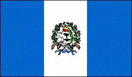 |  |
Letra del himno nacionalhimno_30.
Información general
Nombre oficial: República de Guatemala
Área: 108 889 km²
Costas: 400 km
División política: 22 Departamentos
Departamento Cabecera
- Alta Verapaz Cobán
- Baja Verapaz Salamá
- Chimaltenango Chimaltenango
- Chiquimula Chiquimula
- Escuintla Escuintla
- El Progreso Guastatoya
- Guatemala Guatemala
- Huehuetenango Huehuetenango
- Izabal Puerto Barrios
- Jalapa Jalapa
- Jutiapa Jutiapa
- El Petén Flores
- Quetzaltenango Quetzaltenango
- El Quiché Santa Cruz del Quiché
- Retalhuleu Retalhuleu
- Sacatepéquez Antigua Guatemala
- San Marcos San Marcos
- Santa Rosa Culiapa
- Sololá Sololá
- Suchitepéquez Mazatenango
- Totonicapán Totonicapán
- Zacapa Zacapa
Unidad monetaria: Quetzal
1 Quetzal = 100 centavos
Idiomas: Español (oficial); veintiuna lenguas mayas (entre ellas akateko, kaqchikel, kiiché, mam), xinka y garífuna.
Fiesta nacional: 15 de septiembre, Día de la Independencia
Gentilicio: Guatemalteco
Hora oficial: GMT -6 horas (normal), -5 (verano)
Miembro de: ONU, OEA, MCCA
Curiosidades
Guatemala es básicamente montañosa pero al norte se encuentra el Petén , una zona selvática abundante en maderas preciosas.
Guatemala tiene numerosos volcanes, el más elevado es el Tajamulco con 4 210 m.
Información adicional en Internet.
Perfil Ecónomico
Perfil Demográfico
Población: 11.237.196 hab.
Densidad de población: 103 hab/km²
Fuente INE http://www.ine.gob.gt/
Perfil Cultural
Religión:
- Católicos: 91,9%
- Protestantes: 6,2%
- No religiosos: 1,6%
- Otros: 0,3%
Sistema de Gobierno
Constitución vigente: 1993
Sistema ejecutivo: Presidente y Vicepresidente, elegidos directamente para un término de cuatro años, no reelegibles. El Presidente es asesorado por el Consejo de Ministros.
Sistema legislativo: Congreso unicameral (ochenta diputados elegidos por sufragio directo, sesenta y cuatro por distritos electorales y el resto por lista nacional, con un término también de cuatro años).
Sistema judicial: Corte Suprema de Justicia (por lo menos siete magistrados, elegidos por el Congreso para un período de cuatro años; nombra a los jueces de los tribunales inferiores). Existen la Corte de Constitucionalidad y el Tribunal Supremo Electoral.
Gobierno subdivisional: El país está dividido en
veintidós departamentos (cada uno con un Gobernador nombrado
por el Presidente) y municipios.
Algunas figuras notables:
- Rafael Arévalo Martínez (1884). Poeta y novelista
- Miguel Angel Asturias (1899-1974). Novelista. Premio Nobel de Literatura 1967.
- José Batres y Montúfar (1809-1844). Poeta y escritor
- Luis Cardoza Aragón (1904). Poeta, escritor y periodista
- Enrique Gómez Carrillo (1873-1927). Novelista y ensayista
- Rafael Landívar (1731-1793). Poeta
- José Milla (1822-1882). Poeta, historiador y novelista
- Alonso de la Paz (1605-1676). Escultor
- Rigoberta Menchu Tum. Premio Nobel de la Paz 1992.
Lugares declarados patrimonio mundial por la UNESCO
- Antigua Guatemala.
- Quiriguá (Parque Arqueológico y ruinas).
- Tikal (Parque Nacional).
Aproximación histórica
Guatemala limita con México por el norte y el oeste, con Belice y el Mar de las Antillas por el este y con Honduras y el Salvador por el sudeste.
La civilización maya floreció en los territorios que hoy ocupan Guatemala, Honduras y el sudeste de México. Los mayas alcanzaron un gran desarrollo en su primera época de apogeo en la parte norte de Guatemala. Dos de las ciudades mayas más importantes, Tikal y Uacaxtún, se redescubrieron en la zona de El Petén, en Guatemala. En 1960 se descubrió la Gran Plaza de Tikal que por el número de sus monumentos es la más conocida de las ciudades mayas. En Tikal se conservan cinco templos, en forma de pirámide. En Uacaxtún existe un monumento funerario que se considera el más antiguo de la región. Los mayas se destacaron en artes, ciencias, astronomía y matemáticas. Empleaban un sistema de numeración basado en el número 20 en lugar de nuestro sistema decimal actual de base 10 y conocían el numero 0.
No se conoce con exactitud el motivo de la decadencia de la civilización maya; el agotamiento de las tierras cultivables, epidemias, o un cambio de clima pudo haber llevado a los mayas a abandonar los florecientes centros de su imperio. A la llegada de los españoles sobrevivían los quichés, con una cultura avanzada y una escritura jeroglífica que fue substituida después de la conquista por una alfabética, gracias a lo cual han llegado a nosotros importantes escritos como el Popol Vuh.
Guatemala fue conquistada en el siglo XVI por los españoles. Se independizó en 1821, como parte de México, dentro del imperio de Iturbide. En 1823 forma parte de las Provincias Unidas de Centro América. Al desintegrarse esta Federación en 1833, surge Guatemala como estado independiente.
Su relieve presenta vastas zonas llanas al norte y el este, con cordones montañosos en la región occidental, con más de 30 volcanes identificados. La economía es fundamentalmente agrícola exportando café, azúcar, bananos y algodón.
Guyana
Información general
Nombre oficial: República de Guyana
Área: 214 969 km²
Costas: 459 km
División política: 10 Regiones
Departamentos Capitales
- Barima Waini
- Pomeroon Supenaam
- Essequibo Islands West Demerara
- Demerara Mahaica
- Mahaica Berbice
- East Berbice Corentyne
- Cuyuni Mazaruni
- Potaro Siparuni
- Upper Takutu Upper Essequibo
- Upper Demerara Berbice
Unidad monetaria: Dólar de Guyana
1 Dólar de Guyana = 100 centavos
Idiomas: Inglés (oficial); dialecto criollo; se hablan también hindi, urdu, arauaco, portugués, chino, y ocho lenguas más (no oficiales)
Fiesta nacional: 23 de febrero, Día de la República
Gentilicio: Guyanés
Hora oficial: GMT -3 horas (normal/verano)
Miembro de: ONU, Commonwealth, CARICOM, OEA
Curiosidades
Guyana es la única nación independiente que habla inglés en América del Sur.
Georgetown la capital se encuentra a casi 2 metros bajo el nivel del mar.
Perfil Ecónomico
Perfil Demográfico
Población: 751.000 hab.
Densidad de población: 3,2 hab/km²
Perfil Cultural
Alfabetismo: 98 %
Religión:
- Hinduístas: 37,6%
- Católicos: 20,0%
- Protestantes: 15,0%
- Anglicanos: 13,0%
- Musulmanes: 8,2%
- No religiosos: 3,5%
- Religiones tribales: 2,5%.
Sistema de Gobierno
Constitución vigente: 6 de octubre de 1980
Sistema ejecutivo: Presidente (Jefe de Estado, encabeza el partido mayoritario en la Asamblea Nacional y ejerce el cargo por la duración de ésta), Primer Vicepresidente, Primer Ministro y Gabinete.
Sistema legislativo: Asamblea Nacional (cincuenta y tres miembros elegidos por cinco años y doce representantes regionales).
Sistema judicial: Corte Suprema, Corte Superior, Corte de Apelación y cortes de jurisdicción sumaria.
Gobierno subdivisional: Cada región tiene un Consejo Regional Democrático, elegido por un término de cinco años y cuatro meses, que puede ser disuelto por el presidente.
Aproximación histórica
Situada al noreste de América del Sur, Guyana limita con Venezuela por el noroeste, Surinam por el este y con Brasil por el sur.
La región aunque conocida por los europeos desde el siglo XV, sólo comienza a ser colonizada dos siglos después. Guyana es colonia británica durante casi toda la historia posterior a su descubrimiento. En el año 1966 Guyana se convirtió en un Estado independiente asociado a la Comunidad Británica.
Su relieve presenta una planicie estrecha, hacia el litoral, con mesetas cubiertas por selva en el interior y cadenas montañosas y bosques tropicales al este y al sur.
Guyana es uno de los pocos países que aun cuenta con grandes reservas inexploradas de oro y diamantes, posee también grandes yacimientos de bauxita.
Su ciudad más importante es Georgetown con algo
más de 240 000 habitantes.
Honduras
 |
Información general
Nombre oficial: República de Honduras
Área: 112 492 km²
Costas: 820 km
División política:18 Departamentos
Departamento Cabecera
- Atlántida La Ceiba
- Colón Trujillo
- Comayagua Comayagua
- Copán Santa Rosa de Copán
- Cortés San Pedro de Sula
- Choluteca Choluteca
- El Paraíso Yuscarán
- Francisco Morazán Tegucigalapa D.C.
- Gracias a Dios Puerto Lempira
- Intibucá La Esperanza
- Islas de la Bahía Roatán
- La Paz La Paz
- Lempira Gracias
- Ocotepeque Nueva Ocotepeque
- Olancho Juticalpa
- Santa Bárbara Santa Bárbara
- Valle Nacaome
- Yoro Yoro
Unidad monetaria: Lempira
1 Lempira = 100 céntimos
Idiomas: Español (oficial); miskito, garífuna, tawaka, pech, tolupan; algunas comunidades de origen extranjero hablan también inglés, chino y árabe (no oficiales)
Fiesta nacional: 15 de septiembre, Día de la Independencia
Gentilicio: Hondureño
Hora oficial: GMT -6 horas (normal/verano)
Miembro de: ONU, OEA, MCCA
Curiosidades
- La represa del Cajón alimentada por el río Humuya tiene una altura de 226m y una capacidad de 5 650 millones de m³
- El viejo Imperio Maya tuvo su asiento en la región de Honduras.
Información adicional en Internet.
Perfil Ecónomico
Perfil Demográfico
Densidad de población: 54 hab/km²
Perfil Cultural
Alfabetismo: 81 %
Religión:
- Católicos: 94,2%
- Protestantes: 1,3%
- Otros: 3,3%
- Espiritistas: 0,4%
- Ortodoxos: 0,4%
- Budistas: 0,2%
- Musulmanes: 0,1%.
Algunas figuras notables:
- Policarpo Bonilla (1858-1926). Político y escritor
- Alberto Membreño (1859-1921). Escritor y filólogo
- Juan Ramón Molina (1875-1908). Poeta
- Ramón Rosa (1848-1893). Ensayista
- José Trinidad Reyes (1797-1855). Poeta
- Froilán Turcios (1875-1943). Novelista y poeta
- José Cecilio del Valle (1780-1834). Patriota y escritor
- Rafael Heliodoro Valle (1891-1959).Profesor, historiador, ensayista, cronista y poeta
- José Antonio Velázquez (1906). Pintor
Lugares declarados patrimonio mundial por la UNESCO
- Ruinas mayas de Copán.
- Reserva de la Biosfera de Río Plátano.
Sistema de Gobierno
Constitución vigente: Noviembre de 1982
Sistema ejecutivo: Presidente (electo por mayoría simple de votos para un período de cuatro años, no reelegible. Desde 1985, la Ley Electoral da la victoria al candidato cuyo partido obtenga más votos).
Sistema legislativo: Congreso Nacional (128 diputados).
Sistema judicial: Corte suprema (nueve magistrados, elegidos por un término de cuatro años), cinco Cortes de Apelación y juzgados de Letras y de Paz.
Gobierno subdivisional: Los gobernadores departamentales son elegidos por voto popular; los municipios (289) son autónomos.
Aproximación histórica
Situada entre el Mar Caribe al norte, Nicaragua al este y sudeste, el Salvador al sur y Guatemala al oeste se encuentra Honduras. Posee entre otras; las islas de la Bahía, las del Cisne y los cayos Cochinos, en el Golfo de Fonseca.
La cordillera Centroamericana que recorre Honduras de noroeste a sudeste divide a Honduras en dos regiones: la oriental y la occidental, con alturas que sobrepasan los 2 000 m. Entre los ramales de la cordillera se encuentran fértiles valles en los que se asienta la población.
En la época precolombina el territorio actual de Honduras fue parte de la civilización maya. El viejo Imperio Maya que se extendía desde el norte hasta la costa oeste hondureña tuvo su centro en la actual Honduras. En la zona de Copán, fundada en el año 436 y una de las ciudades más esplendorosas de los mayas, se han encontrado pruebas importantes del arte de este pueblo. A la llegada de los españoles quedaban pocas huellas de la civilización maya y las tribus que encontraron no habían alcanzado un alto nivel de desarrollo.
Descubierta por Américo Vespucio se independizó de España en 1821, junto con las provincias de Centro América de las que se separó en 1838.
La economía de Honduras es dependiente de las exportaciones de bananos, tabaco y otros productos agrícolas.
Nicaragua
 |
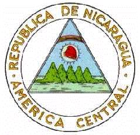 |
Información general
Nombre oficial: República de Nicaragua
Área: 130 700 km²
Costas: 910 km
División política:16 Departamentos
Departamentos Capital
- Boaco Boaco
- Carazo Jinotepe
- Chinandega Chinandega
- Chontales Juigalpa
- Estelí Estelí
- Granada Granada
- Jinotega Jinotega
- León León
- Madriz Somoto
- Managua Managua
- Masaya Masaya
- Matagalpa Matagalpa
- Nueva Segovia Ocotal
- Río San Juan San Carlos
- Rivas Rivas
- Zelaya Bluefields
Unidad monetaria: Córdoba oro
1 Córdoba oro = 100 centavos (oro)
Idiomas: Español (oficial); misquito; algunas comunidades de origen extranjero hablan inglés, chino y unas doce lenguas más (no oficiales)
Fiesta nacional: 15 de septiembre, Independencia
Gentilicio: Nicaragüense
Hora oficial: GMT -6 horas (normal/verano)
Miembro de: ONU, OEA, MCCA, ALADI (observador)
Curiosidades
El lago de Nicaragua descubierto por Gil González Dávila en 1522 tiene una superficie de unos 8 000 Km² y en su interior se encuentran unas 800 islas o islotes. La mayor de ellas la de Ometepe o Altagracia tiene 296 Km². Entre la fauna que lo habita se encuentra el tiburón de agua dulce, especie única en el mundo.
El volcán más activo de Nicaragua es el Cerro Negro, al noroeste de Managua. El volcán ha estado activo en 1968, 1969, 1971, 1992 y 1995. La erupción de 1960 duró tres meses.
Información adicional en Internet.
Perfil Ecónomico
Perfil Demográfico
Población: 5.483.477 hab.
Densidad de
población: 40,7hab/km²
Fuente INEC http://www.inec.gob.ni/
Perfil Cultural
Alfabetismo: 64 %
Religión:
- Católicos: 94,0%
- Protestantes: 5,2%
- Otros: 0,8%
Algunas figuras notables:
- Alfonso Cortés (1893-1963). Poeta
- Pablo Antonio Cuadra (1912), Poeta y dramaturgo
- Rubén Darío (1867-1916).Poeta
- Salomón de la Selva (1893-1959). Poeta
- Luis A. Delgadillo (1887-1961). Compositor
- Miguel Larreynaga (1771-1916).Escritor y profesor
- Azarías Pallais (1885-1954). Poeta
- Armando Morales (1927).Pintor
Sistema de Gobierno
Constitución vigente: 9 de enero de 1987 (Última reforma en 2000)
Sistema ejecutivo: Presidente (elegido por voto directo para un período de seis años), auxiliado por el Vicepresidente y un Gabinete.
Sistema legislativo: Asamblea Nacional (noventa y dos representantes elegidos por voto directo para un período de seis años).
Sistema judicial: Corte Suprema (siete magistrados como mínimo), Cortes de Apelación y otras cortes. Consejo Supremo Electoral.
Gobierno subdivisional: Seis regiones y tres zonas especiales, subdivididas en dieciséis departamentos. Los municipios (134 en total) son electos por sufragio directo.
Aproximación histórica
Situada entre Honduras y Costa Rica, con costas al Mar Caribe y el Océano Pacífico se encuentra Nicaragua. Su territorio con un área de unos 130 000 kilómetros cuadrados, incluye unos 9 000 de lagos.
En tiempos precolombinos el imperio azteca se extendía hasta Nicaragua. Hacia la costa caribeña Nicaragua estuvo habitada por indios miskitos (también misquitos) que hablaban una lengua chibcha. En la costa del Pacífico estuvo habitada por los nicaraos, o niquirianos
Descubierta por Colón en su cuarto viaje en 1502 pasaría algún tiempo para que los conquistadores se establecieran definitivamente en ella. En 1522 González Dávila es detenido por la resistencia indígena y dos años más tarde Francisco Hernández de Córdoba iniciaría una expedición colonizadora.
Proclamó su independencia en 1821, incorporándose a México. En 1838 alcanzó su independencia. Fue ocupada entre 1912 y 1933 por los Estados Unidos de Norteamérica. En 1934 es asesinado el líder guerrillero Augusto Cesar Sandino, por orden de Anastasio Somoza comandante de la Guardia Nacional. Desde 1936 y durante 20 años gobierna el país con mano de hierro el dictador Anastasio Somoza, asesinado en 1956 su hijo lo sustituye en el poder y durante todo ese período la familia del dictador es la principal beneficiaria de la economía del país.
En 1972, Managua es devastada por un terremoto que causa la muerte de más de 6 000 personas. En 1978 se producen fuertes alzamientos y los guerrilleros del Frente Sandinista de Liberación Nacional vencen finalmente derrotando al régimen somocista en Julio de 1979.
En el territorio nicaragüense existen más de 40 volcanes. La población se asienta fundamentalmente en las tierras bajas al oeste, en la costa con el Pacífico.
La principal actividad es la agricultura con algodón, caña de azúcar y café. Posee recursos minerales como oro, plata, cinc y plomo.
Panamá
 |
 |
Información general
Nombre oficial: República de Panamá
Área: 75 517 km²
Costas: 2 490 km
División política:9 Provincias y 2 comarcas indígenas
Provincia Capital
- Bocas del Toro Bocas del Toro
- Coclé Penonomé
- Colón Colón
- Chiriquí David
- Darién La Palma
- Herrera Chitré
- Los Santos Las Tablas
- Panamá Ciudad de Panamá
- Veraguas Santiago
Unidad monetaria: Balboa
1 Balboa = 100 centésimos
Idiomas: Español (oficial); se hablan los dialectos cuna, chocoe y guaymí en las comarcas indígenas; e inglés (no oficiales)
Fiesta nacional: 3 de noviembre, Separación de Panamá de Colombia
Gentilicio: Panameño
Hora oficial: GMT -5 horas (normal/verano)
Miembro de: ONU, OEA, ALADI (observador), MCCA (observador)
Curiosidades
El Canal de Panamá permite la comunicación acuática entre los dos grandes océanos del mundo. La inmensa selva en el Darién impide la comunicación terrestre entre América del Norte y América del Sur y la Carretera Panamericana se interrumpe en la ciudad de Yaviza, en la provincia del Darién.
Las obras para la construcción del canal de Panamá se iniciaron en 1908 y concluyeron en 1914. Anteriormente en 1789 Francia había ganado la concesión para la construcción del Canal a través del istmo de Panamá, pero esta empresa fracasó 10 años más tarde.
Información adicional en Internet.
Perfil Ecónomico
Perfil Demográfico
Población: 2.839.177 hab.
Densidad de población: 38,4 hab/km²
Fuente http://www.contraloria.gob.pa/dec/
Perfil Cultural
Alfabetismo: 92 %
Religión:
- Católicos: 82,3%
- Protestantes: 5,0%
- Musulmanes: 4,5%
- No religiosos: 3,3%
- Anglicanos: 1,1%
- Budistas: 0,1%
- Judíos: 0,1%
- Ortodoxos: 0,1%
- Otros: 3,5%
Algunas figuras notables:
- Joaquín Beleño (1921). Novelista
- Roque Cordero (1927). Compositor y director de orquesta
- Alberto Galimany (1889). Músico
- Narciso Garay (1876-1953). Músico
- Darío Herrera (1869-1914). Poeta y escritor
- Amelia Denis de Icaza (1836-1910). Poetisa y escritora
- Ricardo Miró (1883-1940). Poeta y escritor
- Salomón Ponce Aguilera (1868-1945). Escritor
- Rogelio Sinán (1904). Poeta y escritor
Lugares declarados patrimonio mundial por la UNESCO
- Reservas de la Cordillera de Talamanca-La Amistad (compartido con Costa Rica).
- Parque Nacional Darién.
- Fortificaciones de Portobelo y San Lorenzo.
Sistema de Gobierno
Constitución vigente: 11 de octubre de 1972 (enmendada el 24 de abril de 1983)
Sistema ejecutivo: Presidente y dos Vicepresidentes (elegidos por sufragio universal directo para un período de cinco años), gabinete de doce ministros.
Sistema legislativo: Asamblea Legislativa (setenta y dos miembros elegidos por cinco años).
Sistema judicial: Corte Suprema de Justicia (nueve magistrados nombrados por el gabinete y aprobados por la Asamblea Legislativa por un período de diez años), cinco Tribunales Superiores de Distrito Judicial con diecinueve magistrados y juzgados de circuitos y municipales.
Gobierno subdivisional: Las provincias se dividen en distritos (67) y corregimientos (510). Están encabezados por un Gobernador, nombrado por el Presidente y un Consejo Municipal integrado por los representantes de los corregimientos.
Aproximación histórica
Panamá se encuentra en el istmo que une a América Central con la del Sur, limitando con Costa Rica por el oeste y con Colombia por el este.
Los españoles llegaron a la región en 1501. En 1821 se incorpora con el nombre de Departamento del Istmo a la Gran Colombia.
En 1879 una empresa francesa dirigida por Ferdinand de Lesseps gana la concesión para construir un canal a través del istmo. Mala administración, la fiebre amarilla y la malaria provocan la muerte de 22 000 trabajadores y el fracaso de la empresa 10 años después.
En 1903 después de que el Senado de Colombia desaprueba el tratado para la construcción del canal, Estados Unidos estimula una rebelión separatista y adquiere el derecho para el control perpetuo del canal, cuyas obras se inician en 1908 y concluyen en 1914.
Estados Unidos renuncia a la soberanía perpetua sobre el Canal en 1974 y en 1977 el entonces presidente norteamericano Jimmy Carter firma el tratado por el cual el Canal y sus instalaciones pasarán al control de los panameños en el año 2000.
Panamá está dividido en dos planicies selváticas, una estrecha hacia el Atlántico y otra más ancha, con zonas de sabana, hacia el Pacífico.
En la economía panameña desempeña un papel fundamental los servicios a la zona del Canal y la actividad comercial en la Zona Libre de Colón.
Suriname
 |
Información general
Nombre oficial: República de Suriname.
Área: 163 265 km².
Costas: 386 km.
División política:10 Distritos
Distrito Capital
- Brokopondo Brokopondo
- Commewijne Nieuw Amsterdam
- Coronie Totness
- Marowijne Albina
- Nickerie Nieuw Nickerie
- Para Onverwatcht
- Saramacca Groningen Sipaliwini
- Wanica Lelydorp
- Paramaribo Paramaribo
Unidad monetaria: Florín de Sur
1 Florín de Sur = 100 centavos.
Idiomas: Holandés (oficial); inglés, sranang tongo, indostánico, javanés, chino, arauaco, caribe. árabe y diez pequeñas lenguas más (no oficiales).
Fiesta nacional: 25 de noviembre, Día de la Independencia.
Gentilicio: Surinamés.
Hora oficial: GMT -3 horas (normal/verano).
Miembro de: ONU, OEA.
Curiosidades
Suriname es la antigua Guayana Holandesa, una de las colonias más atrasadas de Holanda.
Suriname recibió inmigraciön india y japonesa desde el siglo pasado.
Perfil Ecónomico
Perfil Demográfico
Población: 449.000 hab.
Densidad de población: 2,7 hab/km²
Es uno de los países con menor de densidad de poblacion de América Latina
Perfil Cultural
Alfabetismo: 94 %.
Religión:
- Protestantes: 37,8%
- Católicos: 37,0%
- Musulmanes: 12,0%
- Religiones tribales: 5,0%
- Hinduístas: 12,8%
- Otros: 4,6%.
Sistema de Gobierno
Constitución vigente: Septiembre de 1987 (enmendada en 1992).
Sistema ejecutivo: Presidente, Vicepresidente (actúa como Primer Ministro), Gabinete.
Sistema legislativo: Asamblea Nacional (cincuenta y un miembros, electos por sufragio universal para un término de cinco años, elige al Presidente y al Vicepresidente, también para un término de cinco años)
Sistema judicial: Corte de Justicia y cortes cantonales.
Aproximación histórica
Situada entre Guyana y la Guayana francesa se encuentra Suriname. Su población no llega al medio millón de habitantes.
Suriname es una de las ex colonias de Holanda. Los primeros exploradores desembarcaron en ella al final del siglo XVI e inicios del siglo XVII. En 1667 Inglaterra cedió el país a Holanda a cambio de la entonces denominada ciudad de Nueva Amsterdam (actual Nueva York en los Estados Unidos de Norteamérica). La independencia se alcanza en 1975 en que el país pasa a llamarse Suriname.
Suriname ha recibido a lo largo de su historia inmigración india y japonesa.
Posee importantes yacimientos de bauxita. En su mayor parte, el territorio consiste en una meseta de escasa elevación, con ligeras pendientes y cubierta por la selva tropical. La zona costera es estrecha y por lo general arenosa o pantanosa. En ella se cultivan principalmente arroz, caña de azúcar, platanos y cítricos.
Su capital Paramaribo tiene algo menos de 200 000 habitantes.
Venezuela
 |
Información general
Nombre oficial: República Bolivariana de Venezuela.
Área: 916 445 km².
Costas: 2800 km.
División política:22 Estados, un Distrito Federal, dependencias federales
Estado Capital
- Distrito Federal Caracas
- Amazonas Puerto Ayacucho
- Anzoátegui Barcelona
- Apure San Fernando de Apure
- Aragua Maracay
- Barinas Barinas
- Bolívar Ciudad Bolívar
- Carabobo Valencia
- Cojedes San Carlos
- Delta Amacuro Tucupita
- Falcón Coro
- Guárico San Juan de los Morros
- Lara Barquisimeto
- Mérida Mérida
- Miranda LosTeques
- Monagas Maturín
- Nueva Esparta La Asunción
- Portuguesa Guanare
- Sucre Cumaná
- Táchira San Cristóbal
- Trujillo Trujillo
- Yaracuy San Felipe
- Zulia Maracaibo
Unidad monetaria: Bolívar
1 Bolívar = 100 céntimos.
Idiomas: Español (oficial); italiano, inglés, portugués, chino (no oficiales) (son hablados por minorías étnicas residentes en el país) arauaco, caribe, guajiro, etc..
Fiesta nacional: 5 de julio, Firma del Acta de la Independencia.
Gentilicio: Venezolano.
Hora oficial: GMT -4 horas (normal/verano).
Miembro de: ONU, OEA, OPEP, ALADI, Pacto Andino.
Curiosidades
Situada, en el estado de Bolívar en Venezuela, se encuentra la catarata mas alta del mundo, El Salto del Angel.
Venezuela posee mas de 70 ilas e islotes entre ellas: Margarita, Cubagua y Coche que forman el Estado de Nueva Esparta y el archipiélago de los Roques.
El territorio venezolano presenta seis regiones bien diferenciadas geográficamente: el litoral caribe;o, los Andes, la depresión del Lago Maracaibo, los Llanos, La Gran Sabana del Caroní y la zona entre la Costa y Los Lanos.
Información adicional en Internet.
Perfil Ecónomico
Perfil Demográfico
Población: 23.054.210 hab.
Densidad de población: 27,5 hab/km².
Fuente: http://www.sisov.mpd.gov.ve/cgibin/RpWebEngine.exe/PortalAction?
Perfil Cultural
Alfabetismo: 93 %.
Religión:
- Católicos: 93,1%
- No religiosos: 3,1%
- Protestantes: 1,1%
- Religiones tribales: 1,0%
- Judíos: 0,1%
- Ortodoxos: 0,1%
- Otros: 1,5%
Algunas figuras notables:
- Cecilio Acosta (1818-1881). Escritor
- Andrés Bello (1781-1865). Polígrafo, educador, filólogo, poeta, ensayista y crítico literario
- Andrés Eloy Blanco (1897-1955). Poeta
- Rufino Blanco Fombona (1874-1944).Gobernador, diputado, polígrafo y poeta
- Teresa Carreño (1853-1917). Compositora y pianista
- Rómulo Gallegos (1884-1969). Ministro, diputado y novelista
- Arturo Michelena (1863-1898). Pintor
- Jesús Rafael Soto (1923). Pintor
- Arturo Uslar Pietri (1906). Novelista
- José María Vargas (1786-1854). Médico y político.
Lugares declarados patrimonio mundial por la UNESCO
- Coro y su puerto.
Sistema de Gobierno
Constitución vigente: Enero de 1961.
Sistema ejecutivo: Presidente (elegido por sufragio universal por un término de cinco años), Consejo de Ministros (veinticinco ministros).
Sistema legislativo: Senado (cincuenta y tres miembros, dos por cada estado, incluido el Distrito federal, más los representantes de las minorías y los ex presidentes constitucionales), Cámara de Diputados (representantes de las minorías, y los diputados que determina la Ley, actualmente 203 electos).
Sistema judicial: Corte Suprema de Justicia, cinco cortes superiores en el Distrito Federal, juzgados superiores en cada estado, y tribunales de primera instancia. Además, hay un Consejo de Judicatura. Los magistrados de la Corte Suprema son nombrados por el Congreso Nacional.
Gobierno subdivisional: Veintidós estados, un distrito federal, 290 municipios autónomos, 892 municipios foráneos, municipios urbanos, parroquias y municipios capitales. Las autoridades estatales y municipales son elegidas por voto popular directo, con excepción del gobernador del Distrito Federal, quien es nombrado por el Presidente de la República.
Aproximación histórica
Los primeros exploradores que llegaron a la región de Maracaibo, la denominaron "pequeña Venecia", al ver las chozas levantadas sobre pilotes. Asomada al Mar de las Antillas, Venezuela limita con Guyana, por el este, con Brasil, por el sur y con Colombia por el oeste.
En el territorio venezolano vivieron los caribes y los arauacos. Los caribes eran belicosos guerreros que se desplazaban por el territorio continental. Los arauacos eran el grupo más extendido, que habitó en distintas partes de América y era un pueblo de cazadores y pescadores que también conoció el cultivo de la tierra.
Descubierta por Colón en su tercer viaje en 1498, Venezuela tuvo un desarrollo más lento debido a la carencia de mano de obra y minas. El territorio venezolano fue administrado por Santo Domingo y Bogotá hasta que se creó en 1777 la Gran Capitanía de Venezuela que sentó las bases para la unidad territorial del nuevo país.
La independencia se proclamó en 1811 y consolidarla duró alrededor de 10 años, en una lucha sangrienta y sin parangón en América. Los últimos restos del ejercito español fueron derrotados en 1821, en Carabobo. Simón Bolívar héroe máximo de la independencia y presidente de la Gran Colombia, integrada por Colombia, Venezuela y Ecuador, mantuvo esta unidad hasta 1829. Un año después Venezuela inició su vida política como nación independiente.
En la superficie de Venezuela se distinguen regiones muy variadas: las últimas estribaciones de los Andes y la cordillera de la costa, al noroeste, en cuyas mesetas se encuentran Caracas, Valencia y Mérida. La cuenca del lago de Maracaibo, al oeste, con su riqueza petrolera, la región de los llanos con unos 300 000 kilómetros cuadrados, al este y al sur. Una amplia meseta que configura la región de Guayana, quebrada por algunas sierras que aumentan hacía el sur y donde se encuentra el famoso "Salto del Angel". El río Orinoco, uno de los mayores del mundo, drena aproximadamente el 80% de su territorio.
Venezuela es uno de los primeros productores de petróleo del mundo lo que es la base de su economía. Posee además grandes reservas de mineral de hierro, carbón, aluminio, azufre, oro, bosques y un gran potencial hidroeléctrico. Además de la industria petroquímica, destaca la siderúrgica y la industria del cemento. Su capital Caracas tiene algo más de dos millones de habitantes.
Paraguay
| 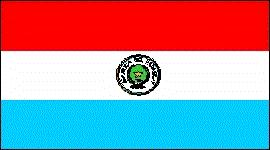 | 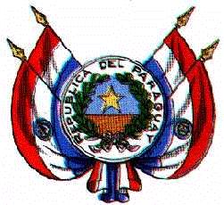 |
Información general
Nombre oficial: República del Paraguay
Área: 406 752 km²
Costas: No tiene costas
División política:17 Departamentos y el Distrito Capital Asunción
Departamentos Capital
- Concepción Concepción
- San Pedro San Pedro
- La Cordillera Caacupé
- Guairá Villarrica
- Caaguazú Coronel Oviedo
- Caazapá Caazapá
- Itapúa Encarnación
- Misiones San Juan Bautista de las Misiones
- Paraguarí Paraguarí
- Alto Paraná Ciudad del Este
- Central Areguá
- Ñeembucú Pilar
- Amambay Pedro Juan Caballero
- Canendiyú Salto del Guairá
- Presidente Hayes Pozo Colorado
- Alto Paraguay Fuerte Olimpo
- Boquerón Filadelfia
Unidad monetaria: Guaraní
1 Guaraní = 100 céntimos
Idiomas: Español y guaraní (oficiales); se hablan también otras lenguas indígenas; algunas comunidades de origen extranjero hablan alemán, portugués, italiano, ucraniano, etc.
Fiesta nacional: 14 de mayo, Día de la Independencia
Gentilicio: Paraguayo
Hora oficial: GMT -4 horas (normal), -3 (verano)
Miembro de: ONU, OEA, ALADI, MERCOSUR
Curiosidades
Paraguay en lengua guaraní significa "aguas adornadas", haciendo una metáfora con el paisaje del país formado por un conjunto de islotes florecidos.
En el siglo XVI la ciudad de Asunción se convirtió en el mayor centro de la colonización española en el sudeste de América.
Paraguay no tiene costas marítimas pero sus dos principales ríos, el Paraguay y el Paraná, le comunican con el Atlántico.
Información adicional en Internet.
Perfil Ecónomico
Perfil Demográfico
Población: 6.158.000 hab.
Densidad de población: 13,5 hab/km²
Fuente
http://internacional.universia.net/iberoamerica/datos-paises/paraguay/poblacion.htm
Perfil Cultural
Alfabetismo: 93 %
Religión:
- Católicos: 96,4%
- Protestantes: 1,9%
- No religiosos: 0,4%
- Otros: 1,3%
Algunas figuras notables:
- Agustín Pío Barrios (1885-1944). Músico y compositor
- Gabriel Casaccia (1908-1980). Escritor
- Ruy Díaz de Guzmán (1560-1629). Escritor y militar
- José Asunción Flores (1904). Compositor y violinista
- Juan Carlos Moreno (1912). Compositor
- Josefina Plá (1909). Escritora, periodista, crítica literaria y dramaturga
- Augusto Roa Bastos (1917). Poeta y novelista
- Hugo Rodríguez Alcalá (1918). Poeta y novelista
- Elvio Romero (1927). Poeta
Lugares declarados patrimonio mundial por la UNESCO
- Ruinas de las misiones jesuíticas de La Santísima Trinidad de Paraná y Jesús de Tavarangue.
Sistema de Gobierno
Constitución vigente: 22 de junio de 1992
Sistema ejecutivo: Presidente de la República (Jefe de Estado y de Gobierno, Comandante en Jefe de las Fuerzas Armadas), Vicepresidente y Consejo de Ministros. Tanto el presidente como el vicepresidente son elegidos por sufragio universal directo para un término de cinco años, pero sin derecho a reelección.
Sistema legislativo: Senado (cuarenta y cinco miembros), Cámara de Diputados (ochenta miembros). Ambas Cámaras son elegidas directamente por voto popular para un período de cinco años y están sujetas a disolución.
Sistema judicial: Corte Suprema de Justicia (nueve magistrados designados por el Senado para un término de cinco años), un Tribunal de Cuentas y otros tribunales menores.
Aproximación histórica
En la región del Río de la Plata y enclavado entre Bolivia, Brasil y la Argentina se encuentra Paraguay.
La etnia indígena característica del Paraguay es la de los guaraníes que vivían de la agricultura y ocupaban la región al comenzar la colonización española en 1535.
En el siglo XVI, la ciudad de Asunción se convierte en el centro más importante de la colonización española del Río de la Plata.
En 1811 se independiza de España y en 1814, el dictador Gaspar de Francia, aísla al país del continente hasta su muerte en 1840. En 1865 entra en guerra con Brasil, Argentina y Uruguay, las fuerzas paraguayas son derrotadas en 1870 y el país ocupado por Brasil hasta 1876. El desastre de la denominada Guerra de la Triple Alianza, diezma la población, el país pierde territorios y se instaura un sistema oligárquico que convierte a Paraguay en uno de los países más atrasados de América del Sur. Diferentes golpes militares se suceden en el país y en 1954, el general Alfredo Stroessner inicia un régimen dictatorial que se extiende hasta 1989 y que se caracterizó por la corrupción y la represión.
En el relieve de Paraguay se distinguen tres regiones: la selva, o región oriental, la región central, con planicies y el Chaco, o región occidental cuya aridez aumenta hacia el oeste.
Entre los principales productos agrícolas de Paraguay se encuentran el algodón, la caña de azúcar y madera, con una industria de bienes de consumo y derivados del petróleo.
Perú
 |
Información general
Nombre oficial: República del Perú
Área: 1 285 216 km²
Costas: 2 997 km
División política:12 regiones y 24 departamentos, más la provincia
Departamentos Capital
- Amazonas Chachapoyas
- Ancash Huaraz
- Apurímac Abancay
- Arequipa Arequipa
- Ayacucho Ayacucho
- Cajamarca Cajamarca
- Cuzco Cuzco
- Huancavelica Huancavelica
- Huánuco Huánuco
- Ica Ica
- Junín Huancayo
- La Libertad Trujillo
- Lambayeque Chiclayo
- Lima Lima
- Loreto Iquitos
- Madre de Dios Puerto Maldonado
- Moquegua Moquegua
- Pasco Cerro de Pasco
- Piura Piura
- Puno Puno
- San Martín Moyobamba
- Tacna Tacna
- Tumbes Tumbes
- Ucayali Pucallpa
Unidad monetaria: Nuevo Sol
1 Nuevo Sol = 100 céntimos
Idiomas: Español, quechua y aimará (oficiales); jíbaro y cien lenguas menores; algunas comunidades de origen extranjero hablan también japonés, chino e inglés (no oficiales)
Fiesta nacional: 28 de julio, Día de la Independencia
Gentilicio: Peruano
Hora oficial: GMT -5 horas (normal), -4 (verano)
Miembro de: ONU, OEA, ALADI, Pacto Andino
Curiosidades
En la árida pampa de Nazca, a unos 460 Km al sur de Lima, se encuentra uno de los misterios más asombrosos de la humanidad. Las llamadas líneas de Nazca, un conjunto de perfectos dibujos de dimensiones gigantescas, únicos en el mundo. Entre los dibujos se percibe claramente un ave de 285m de largo y una araña de 46 m. Los estudios realizados presumen que se trata de un calendario producto de la cultura Nazca que habitó en esa región alrededor del año 100 EC.
Machu Picchu es una antigua ciudad inca situada cerca de Cuzco, en los Andes del Perú. Construida en la cima de Huayna Oichu, a 3100 m de altura se le rodeó de una muralla que protegía los grupos de viviendas de piedras, escalonadas y separadas por pasadizos. Los templos no están decorados exteriormente.
En territorio del Perú nace el río Amazonas, el más caudaloso del mundo y uno de los de mayor longitud (6 480km), en la confluencia del Marañón con el Ucayali.
Información adicional en Internet.
Perfil Ecónomico
Perfil Demográfico
Población: 27.219.264 hab.
Densidad de población: 20,5 hab/km²
Fuente INEI http://www.inei.gob.pe/
Perfil Cultural
Alfabetismo: 90 %
Religión:
- Católicos: 88,9%
- Protestantes (evangélicos): 7,2%
- No religiosos: 1,4%
- Otros: 2,5% (1993)
Algunas figuras notables:
- Inca Garcilaso de la Vega (1539-1616). Historiador y escritor
- Carlos Monge (1884). Médico
- Ricardo Palma (1833-1919). Historiador, dramaturgo y periodista
- José Santos Chocano (1875-1934). Poeta
- Fernando Szyszlo (1925). Pintor
- Julio C. Tello (1880-1947). Arqueólogo
- José Hipólito Unanue Pavón (1755-1833). Médico
- César Vallejo (1892-1938). Poeta, novelista y periodista
- Mario Vargas Llosa (1936). Novelista
Lugares declarados patrimonio mundial por la UNESCO
- Parque Nacional Río Abiseo.
- Machu Pichu (santuario histórico).
- Parque Nacional de Manu.
- Cuzco.
- Chan chan (sitio arqueológico).
Sistema de Gobierno
Constitución vigente: 29 de diciembre de 1993 (Última reforma 2005)
Sistema ejecutivo: Presidente (jefe de Estado y Gobierno, electo por sufragio universal para un término de cinco años).
Sistema legislativo: Congreso unicameral (120 miembros elegidos por "distrito nacional único" para un término de cinco años).
Sistema judicial: Corte Suprema (dieciocho vocales supremos), cortes superiores (284 vocales superiores), juzgados de primera instancia (especializados en lo civil, penal, laboral, agrario, del niño y del adolescente), juzgado de Paz Letrados. El Tribunal de Garantías Constitucionales y el Ministerio Público son independientes del poder judicial.
Gobierno subdivisional: Los departamentos se dividen en 194 provincias (más la provincia constitucional de El Callao) y 1 812 distritos.
Aproximación histórica
Situada en los Andes meridionales, Perú limita con Ecuador y Colombia, por el norte, con Brasil y Bolivia, por el este, con Chile por el sur y con el Océano Pacífico por el oeste.
En Perú se perfilan tres regiones naturales: la costa, la sierra y la montaña. La costa es una faja de un ancho entre los 60 y los 170Km, arenosa y árida, con excepción de algunas terrazas fluviales y marinas, así como valles fértiles. La sierra está constituida por los Andes, que al atravesar el país forman tres ramales (cordilleras Occidental, Central y Oriental). Los Andes determinan tres importantes cuencas hidrográficas: la del Pacífico, con cincuenta y tres ríos; la del Amazonas y la del Titicaca. Comparte con Bolivia, el más alto de los grandes lagos del mundo; el Titicaca, con una profundidad máxima de 304 metros y una extensión de algo más de 8 000 kilómetros cuadrados.
Francisco Pizarro llegó al Perú en 1530, con 180 hombres y descubrió la civilización de más desarrollo y organización de la América Antigua, el Imperio Inca. El origen de los primeros incas se confunde con el mito, destacándose las figuras legendarias como Manco Capac. El Imperio Inca conquistó y absorbió los pueblos preincaicos, los actuales territorios de Perú y Bolivia cayeron bajo su poder, hacia el sur llegaron hasta el centro de Chile y hasta Tucumán en la Argentina y por el norte hasta el actual Ecuador. Los incas llegaron a organizar este inmenso imperio. El último emperador inca, Atahualpa vio derrumbarse su imperio ante el invasor español y murió a manos de estos en 1533.
En 1544 fue creado el Virreinato del Perú. La república se proclamó en 1822 y los triunfos en Junín y Ayacucho en 1824 acabaron definitivamente con los últimos intentos de reconquista española.
La industria pesquera ha alcanzado en Perú un desarrollo notable. El país posee un potencial minero muy grande y es productor de hidrocarburos.
Su capital Lima tiene más de 6 millones de habitantes.
Brasil
 |
Información general
Nombre oficial: República Federativa de Brasil
Área: 8 511 996 km²
Costas: 7 491 km
División política: 26 estados y el distrito federal de la capital
Estado Capital
- Acre Rio Branco
- Alagoas Maceió
- Amapá Macapá
- Amazonas Manaus
- Bahía Salvador
- Ceará Fortaleza
- Espírito Santo Vitória
- Goiás Goiânia
- Maranhão São Luis
- Mato Grosso Cuiabá
- Mato Grosso Campo Grande do Sul
- Minas Gerais Belo Horizonte
- Pará Belém
- Paraiba João Pessoa
- Paraná Curitiba
- Pernambuco Recife
- Piauí Teresina
- Rio de Janeiro Rio de Janeiro
- Rio Grande do Norte Natal
- Rio Grande do Sul Pôrto Alegre
- Rondônia Pôrto Velho
- Roraima Boa Vista
- Santa Catarina Florianópolis
- São Paulo São Paulo
- Sergipe Aracaiú
- Tocantins Miracema de Tocantins
- Distrito Federal Brasilia
Unidad monetaria: Real del Brasil
1 Real del Brasil = 100 centavos
Idiomas: Portugués (oficial); algunas comunidades de origen extranjero hablan también alemán, francés, inglés, italiano, español, japonés, ruso, árabe, polaco, chino y unas 150 lenguas menores, entre ellas numerosas habladas por los pueblos indios
Fiesta nacional: 7 de septiembre, Día de la Independencia
Gentilicio: Brasileño
Hora oficial: GMT Islas del Atlántico -2 horas (normal/verano). Este, zona costera -3 (normal), -2 (verano); Manaos -4 (normal), -3 (verano), Acre .5 (normal), -4 (verano).
Miembro de: ONU, OEA, ALADI
Curiosidades
- Brasil es en extensión el quinto país del mundo.
- Con un territorio tan extenso como E.U., Brasil tiene fronteras con diez países de América del Sur.
- El sistema fluvial de Brasil es uno de los más extensos de la Tierra. El Amazonas es el río más caudaloso del mundo y Bananal en el río Araguia (afluente del Tocantins) es la mayor isla fluvial del mundo.
- La Cumbre de la Tierra celebrada en Brasil en 1992 y con la asistencia de 117 jefes de estado sirvió para analizar importantes problemas ecológicos.
- En las calles de Brasil se estiman que viven como indigentes entre 2 y 8 millones de niños. Desde 1988 han sido asesinados más de 5 000 de ellos.
Información adicional en Internet.
Perfil Ecónomico
Perfil Demográfico
Población: 186.583.395 hab.
Densidad de población: 21 hab/km²
Con más de 180 millones de habitantes Brasil es después de Indonesia el quinto país con mayor población del mundo.
Sao Paulo es después de Tokio la segunda área metropolitana más poblada del mundo.
Fuente: http://www.ibge.gov.br/
Perfil Cultural
Alfabetismo: 85 %
Religión:
- Católicos: 82,6%
- Protestantes: 11,3%
- Espiritistas: 2,5%
- No religiosos: 2,5%
- Otros: 1,1%
Algunas figuras notables:
- Jorge Amado (1912 - 2001). Novelista
- Antonio de Castro Alves (1847-1871). Poeta
- Lucio Costa (1902).Arquitecto
- Emilio di Cavalcanti (1897).Pintor
- Camargo Guarnieri (1907).Compositor y director de orquesta
- Antonio Francisco de Lisboa (1730-1814). Escultor y arquitecto
- Joaquín M. Machado de Assís (1839-1908). Novelista y poeta
- Oscar Niemeyer (1907). Arquitecto
- Cándido Portinari (1903-1962). Pintor
- Heitor Villa-Lobos (1887-1959). Compositor y director de orquesta
- Edison Arante do Nascimento (Pelé) (1940).
Lugares declarados patrimonio mundial por la UNESCO
- Misiones jesuíticas guaraníes (Ruinas de Sao Miguel das Missoes).
- Parque Nacional de la Sierra de Capivara.
- Olinda (Centro histórico).
Sistema de Gobierno
Constitución vigente: 5 de octubre de 1988
Sistema ejecutivo:
Presidente (elegido por votación directa para un término de cuatro años), Vicepresidente y gabinete.
Sistema legislativo: Senado Federal (tres miembros por cada estado, elegidos para un término de ocho años) y Cámara de Diputados (503 miembros, elegidos para cuatro años).
Sistema judicial: Tribunal Supremo Federal (once miembros vitalicios, nombrados por el presidente con la aprobación del Senado); Tribunal Federal de Apelaciones; Tribunal de Cuentas; jueces, tribunales militares, electorales y del trabajo.
Gobierno subdivisional: Los estados son autónomos, tienen constitución propia, gobernador y cámara legislativa.
Aproximación histórica
Brasil es la mayor de las naciones latinoamericanas. Su extensión a nivel mundial es sólo sobrepasada por Rusia, Estados Unidos, China y Canadá. Brasil ocupa la mitad de Sudamérica y dentro de sus fronteras se encuentran regiones y pueblos de las más diversas condiciones, origen y nivel de desarrollo. Limita por el norte con cuatro países: Venezuela, Guyana, Surinam y la Guayana Francesa, con Colombia por el noroeste, con Perú y Bolivia por el oeste, con Paraguay y Argentina, por el sudoeste y con Uruguay por el sur.
Aunque Vicente Yañez Pinzón, desviado por una tormenta, arribó al cabo de san Agustín, el 26 de Enero de 1500, se reconoce como descubridor del Brasil, al portugués Pedro Alvarez de Cabral que ese mismo año llegó a las costas de Bahía. La colonización portuguesa fue eminentemente costera permaneciendo la región prácticamente inexplorada. En 1815 Brasil pasó a formar parte del reino de Don Juan VI de Portugal, cuyo hijo Don Pedro fue nombrado regente del Brasil en 1821. Brasil se declaró independiente de Portugal en 1822, en que Pedro I se proclama emperador. Las ideas republicanas se iban expandiendo por el Brasil desde el siglo XVIII y finalmente se decreta la República en 1889.
El sistema fluvial de Brasil es uno de los más extensos de la Tierra. El río Amazonas, con una extensión de 6 695 km atraviesa Brasil de oeste a este. La región amazónica, con grandes selvas, se encuentra al norte. Hacia el nordeste se encuentran zonas semidesérticas. La gran producción agrícola se concentra hacia el sur. Brasil no es montañoso y apenas un 3 % de su territorio está a más de 900 metros sobre el nivel del mar. Aunque casi todo Brasil está dentro de la zona tórrida, hay gran variedad de climas, debido a los vientos, la altitud, las lluvias, la distancia al mar y otros factores. La inmensa región amazónica es húmeda y cálida. El nordeste es caliente y seco.
En el este el clima varía según la altura: las costas son húmedas, pero la temperatura no es excesiva.
La mayor parte de la población brasileña se encuentra cerca del litoral. La población urbana representa cerca del 70 % del total y se concentra en grandes ciudades como Sao Paulo, Río de Janeiro, Belo Horizonte y Recife.
Brasil se considera uno de los países con mayor variedad y cantidad de recursos minerales en el mundo. El desarrollo industrial es de gran vitalidad en los centros urbanos.
Uno de los más significativos proyectos de urbanismo del siglo dio nacimiento a Brasilia, la capital, inaugurada en 1960 y que agrupa edificaciones de gran belleza.
El folklore brasileño es muy rico y variado. Los carnavales cariocas han difundido en todo el mundo el contagioso ritmo de la samba.
Uruguay
 |
Información general
Nombre oficial: República Oriental del Uruguay.
Área: 176 215 km².
Costas: 660 km.
División política:19 departamentos
Provincia Capital
- Artigas Artigas
- Canelones Canelones
- Cerro Largo Melo
- Colonia Colonia
- Durazno Durazno
- Flores Trinidad
- Florida Florida
- Lavalleja Minas
- Maldonado Maldonado
- Montevideo Montevideo
- Paysandú Paysandú
- Río Negro Fray Bentos
- Rivera Rivera
- Rocha Rocha
- Salto Salto
- San José San José de Mayo
- Soriano Mercedes
- Tacuarembó Tacuarembó
- Treinta y Tres Treinta y Tres
Unidad monetaria: Peso uruguayo
1 Peso uruguayo = 100 céntimos.
Idiomas: Español (oficial); algunas comunidades de origen extranjero hablan también italiano, inglés, alemán, portugués, ruso, francés (no oficiales).
Fiesta nacional: 25 de agosto, Día de la Independencia.
Gentilicio: Uruguayo.
Hora oficial: GMT -3 horas (normal/verano).
Miembro de: ONU, OEA, ALADI, MERCOSUR.
Curiosidades
Después de Suriname, Uruguay es el país independiente más pequeño de América del Sur.
Montevideo está situada en la orilla norte del Rio de la Plata.
Perfil Ecónomico
Perfil Demográfico
Población: 3.241.003 hab.
Densidad de población: 19,3 hab/km².
Fuente:
http://www.ine.gub.uy/biblioteca/uruguayencifras2005/uruguay%20en%20cifras%202005.htm
Perfil Cultural
Alfabetismo: 98 %.
Religión:
- Católicos: 56,2%
- No religiosos: 38,3%
- Protestantes: 2,0%
- Judíos: 1,7%
- Ortodoxos: 0,7%
- Otros: 1,1%.
Algunas figuras notables:
- Delmira Agustini (1886-1914). Poetisa.
- Juana de Ibarbourou (1895-1980). Poetisa.
- José Belloni (1882-1965). Escultor.
- Eduardo Fabini (1882-1950). Compositor.
- Juan Carlos Onetti (1909-1994). Escritor.
- Horacio Quiroga (1878-1937).Poeta, dramaturgo y novelista.
- José Enrique Rodó (1872-1917).Escritor.
- Florencio Sánchez (1875-1910).Autor teatral y poeta.
- Joaquín Torres García (1874-1949).Pintor.
- Juan Zorrilla de San Martín (1855-1931). Poeta y escritor.
Lugares declarados patrimonio mundial por la UNESCO
- Barrio Histórico de la Ciudad de Colonia del Sacramento.
Sistema de Gobierno
Constitución vigente: 27 de noviembre de 1966.
Sistema ejecutivo: Presidente (elegido por mayoría simple del voto popular para un término de cinco años), asistido por el Vicepresidente y el Consejo de Ministros (trece miembros).
Sistema legislativo: Congreso Bicameral: Senado (treinta y un miembros) y Cámara de Diputados (noventa y nueve miembros). Los senadores y los diputados son elegidos para un término de cinco años. El Vicepresidente es el presidente del Congreso o Asamblea General.
Sistema judicial: Corte Suprema (cinco miembros) y tribunales menores.
Gobierno subdivisional: Las autoridades departamentales son elegidas por sufragio.
Aproximación histórica
Situada en la región del Río de la Plata, Uruguay limita al norte con Brasil, con Argentina por el oeste, y con el Océano Atlántico por el este y sur.
En 1561 Juan Díaz de Solís desembarcó en la costa del actual Uruguay donde los nativos le dieron muerte. La colonización permanente empezó con Fray Bernardino de Guzmán y otros franciscanos en 1624.
Entre 1810 y 1814, José Gervasio Artigas dirige la guerra por la independencia. En 1821 es anexado a Brasil, dos años después se une a Argentina y se inicia la guerra argentino-brasileña a la que ambos países pusieron termino en 1828, con la mediación de Gran Bretaña, sobre la base del reconocimiento de la independencia de la República del Uruguay.
El relieve de Uruguay es bajo y por la influencia del mar tiene un clima templado con reducidas alteraciones térmicas. La ganadería es uno de los pilares de la economía uruguaya. El 90 % de la población es urbana y está concentrada en mas de un 60 % en una estrecha franja sobre el Río de la Plata.
«-- ir al comienzo
«-- regresar